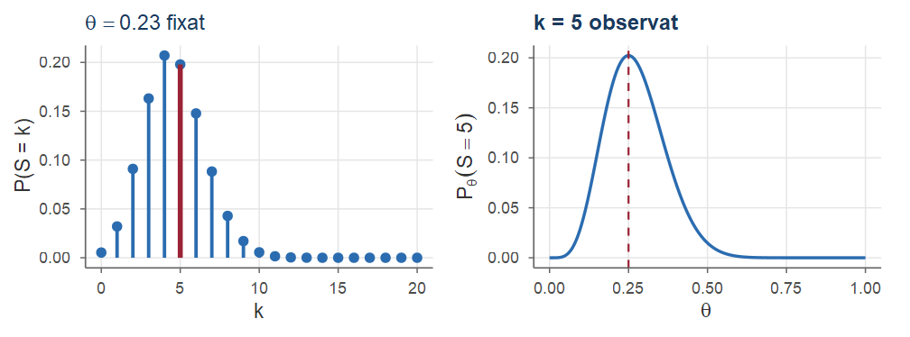
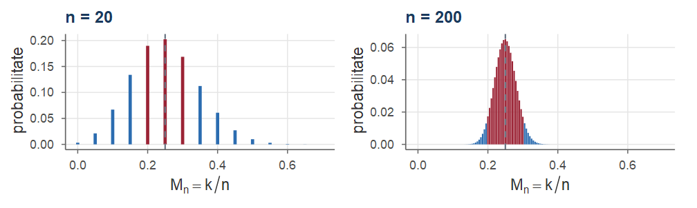
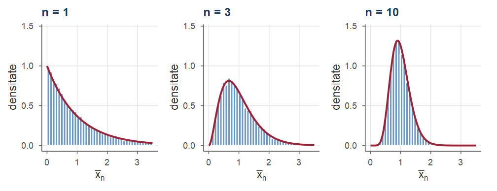
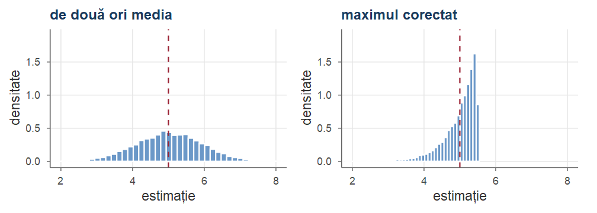

Cursul 2. Introducere în statistica inferențială
Statistică · Cursul 2
Alexandru Amărioarei
Universitatea din București · Facultatea de Matematică și Informatică · 2026–2027
Planul cursului
În probabilități modelul este cunoscut; în statistică rezultatele sunt observate, iar modelul care le-a produs este (parțial) necunoscut. Toate răspunsurile statisticii inferențiale se sprijină pe repartiția de eșantionare a unei statistici.
Obiective.
- problemă de probabilități sau de statistică? Cele trei probleme ale statisticii inferențiale;
- modelul statistic (în detaliu, modelul urnei): parametric, dominat, identificabil;
- eșantion, spațiu de selecție, statistică, repartiție de eșantionare, densitatea comună;
- repartiția exactă a sumei, a mediei, a minimului și a maximului (f.g.m., convoluție);
- primii estimatori: media și eroarea pătratică medie, exact și prin simulare în R.
Teme: probabilități și statistică; modelul statistic; eșantion, spațiu de selecție, statistică; repartițiile exacte ale unor statistici; primii estimatori; exerciții rezolvate.
Recapitulare
Folosim instrumentele de teoria probabilităților din Cursul 1.
Rezultate din Cursul 1 folosite azi
- Câmp de probabilitate \((\Omega,\F,\PP)\) (Definiția 2 din Cursul 1): \(\F\) este o \(\sigma\)-algebră (Definiția 1 din Cursul 1), iar \(\PP\) este \(\sigma\)-aditivă, cu \(\PP(\Omega)=1\).
- Repartiția unei v.a. \(X\): \(\PP_X=\PP\circ X^{-1}\), adică \(\PP_X(B)=\PP(X\in B)\), pe \((\R,\B(\R))\) (Definiția 12 din Cursul 1); este determinată de funcția de repartiție \(F_X(x)=\PP(X\le x)\).
- Independența v.a. \(X_1,\dots,X_n\) (Definiția 37 din Cursul 1): \(\PP(X_1\in B_1,\dots,X_n\in B_n)=\prod_i\PP(X_i\in B_i)\); echivalentă cu factorizarea funcției de masă, respectiv a densității comune (Propoziția 38 din Cursul 1); funcții de blocuri disjuncte de v.a. independente sunt independente (Propoziția 39 din Cursul 1).
- \(X_1,\dots,X_n\) i.i.d. cu media \(\mu\) și varianța \(\sigma^2\): \(\E[\Xbar]=\mu\), \(\Var(\Xbar)=\sigma^2/n\) (Corolarul 43 din Cursul 1).
Recapitulare: funcția generatoare de momente, LNM, TLC
Rezultate din Cursul 1 folosite azi (continuare)
- F.g.m. \(M_X(t)=\E[e^{tX}]\) (Definiția 30 din Cursul 1); f.g.m. uzuale (Exemplele 21 din Cursul 1 și 22 din Cursul 1): \(\Bern(p)\): \(1-p+pe^t\); \(\Bin(n,p)\): \((1-p+pe^t)^n\); \(\Pois(\lambda)\): \(e^{\lambda(e^t-1)}\); \(\GammaD(\alpha,\lambda)\): \(\big(\frac{\lambda}{\lambda-t}\big)^\alpha\), \(t<\lambda\), cu \(\Exp(\lambda)=\GammaD(1,\lambda)\); \(\Norm(\mu,\sigma^2)\): \(e^{\mu t+\sigma^2t^2/2}\).
- Unicitatea: \(M_X=M_Y<\infty\) pe \((-h,h)\), \(h>0\) \(\Rightarrow\) \(X\) și \(Y\) au aceeași repartiție (Teorema 33 din Cursul 1); \(M_{a+bX}(t)=e^{at}M_X(bt)\) (Lema 31 din Cursul 1); pentru un eșantion, \(M_{S_n}(t)=M(t)^n\) și \(M_{\Xbar}(t)=M(t/n)^n\) (Propoziția 46 din Cursul 1).
- LNM: \(\Xbar\asto\mu\) dacă \(\E|X_1|<\infty\) (Teorema 61 din Cursul 1); TLC: \(\sqrt n(\Xbar-\mu)/\sigma\dto\Norm(0,1)\) dacă \(0<\sigma^2<\infty\) (Teorema 64 din Cursul 1).
Din LNM și TLC: media \(\bar x_n\) a unor observații independente aproximează media necunoscută \(\mu\) a populației, cu fluctuații aproximativ normale de ordinul \(\sigma/\sqrt n\). Azi dăm acestor ingrediente definiții precise.
Probabilități și statistică
Probabilități și statistică
În probabilități modelul este cunoscut și ne întrebăm ce date vom observa; în statistică datele sunt cunoscute și ne întrebăm ce model le-a produs: raționăm de la eșantion la populație (Martin 2015, sec. 1.1), cuantificând incertitudinea concluziilor (Panaretos 2016, cap. 1).

Statistica descriptivă rezumă datele observate; statistica inferențială le privește ca realizări ale unor v.a. cu repartiție parțial necunoscută și trage concluzii despre această repartiție.
Urna cu bile roșii și verzi: problema de probabilități
Exemplul 1 (Urna cu bile roșii și verzi)
O urnă conține bile roșii și verzi, proporția (necunoscută) a bilelor roșii fiind \(\theta\in[0,1]\). Efectuăm \(n=20\) de extrageri cu întoarcere; \(X_j=1\) dacă la extragerea \(j\) obținem o bilă roșie, \(X_j=0\) altfel.
Problema de probabilități. Știm că \(\theta=0.23\). Care este probabilitatea de a obține exact 5 bile roșii? Bila extrasă este pusă înapoi, deci compoziția urnei este aceeași la fiecare extragere: \(\PP(X_j=1)=0.23\) pentru orice \(j\), iar extragerile sunt independente. Numărul de bile roșii, \(S_{20}=X_1+\dots+X_{20}\), are repartiția \(\Bin(20,0.23)\) (Propoziția 2) și \[ \PP(S_{20}=5)=\binom{20}{5}(0.23)^5(0.77)^{15}\approx 0.1979 . \] Chiar un rezultat „tipic” (media lui \(S_{20}\) este \(20\cdot0.23=4.6\)) are o probabilitate de numai \(\approx20\%\): variabilitatea datelor este mare când \(n\) este mic.
Urna: problema de statistică
Exemplu (Urna cu bile roșii și verzi (continuare))
Problema de statistică. Am extras 20 de bile și am observat 5 bile roșii. Ce putem spune despre \(\theta\)? Răspunsul natural: estimarea punctuală \(\hat\theta=5/20=0.25\). Altă justificare: alegem valoarea lui \(\theta\) care face rezultatul observat cel mai probabil. Cu \(L(\theta)=\binom{20}{5}\theta^5(1-\theta)^{15}\), \(\theta\in[0,1]\): \[ (\ln L)'(\theta)=\frac5\theta-\frac{15}{1-\theta}=\frac{5-20\theta}{\theta(1-\theta)},\qquad\theta\in(0,1), \] pozitivă pentru \(\theta<0.25\) și negativă pentru \(\theta>0.25\). Deci \(L\) crește pe \((0,0.25]\) și descrește pe \([0.25,1)\); cum \(L(0)=L(1)=0\), maximul pe \([0,1]\) este atins în \(\hat\theta=0.25\), unde \(L(0.25)\approx0.2023\).
Întrebări noi: cât de precisă este estimarea (Cursul 7)? Putem da un interval \(0.25\pm\varepsilon\) care conține \(\theta\) cu mare încredere (Cursul 12)? Sunt datele compatibile cu \(\theta=0.5\) (Cursul 14)?
Două puncte de vedere asupra aceleiași formule
- Stânga: \(\theta=0.23\) fixat, probabilitatea ca funcție de rezultatul \(k\) (problema de probabilități).
- Dreapta: \(k=5\) fixat, aceeași expresie \(\binom{20}{5}\theta^5(1-\theta)^{15}\) ca funcție de \(\theta\) — funcția de verosimilitate (Cursul 9), maximă în \(\hat\theta=0.25\). Nu este o densitate în \(\theta\) (aria de sub grafic nu este \(1\)): compară doar valorile parametrului între ele.
Cele trei probleme: un număr, un interval, o decizie
Exemplul 2 (Cele trei probleme pe exemplul urnei)
Observația din Exemplul 1: \(n=20\), \(k=5\) bile roșii; \(M_n=S_n/n\) este proporția bilelor roșii extrase.
(1) Estimare punctuală. \(\hat\theta=M_{20}=0.25\) este valoarea observată a v.a. \(M_{20}\); o altă repetare a experimentului ar da, în general, altă valoare. Calitatea unei reguli de estimare se judecă prin repartiția lui \(M_n\) (sub fiecare \(\theta\)), nu prin valoarea observată.
(2) Estimare prin interval de încredere. Căutăm un interval aleator care conține \(\theta\) cu probabilitatea \(0.95\). Cum \(S_n\sim\Bin(n,\theta)\), avem \(\E_\theta[M_n]=\theta\), \(\Var_\theta(M_n)=\theta(1-\theta)/n\) (Propoziția 2), iar din TLC (Teorema 64 din Cursul 1), pentru \(n\) mare, \[ \PP_\theta\Big(|M_n-\theta|\le 1.96\sqrt{\tfrac{\theta(1-\theta)}{n}}\Big)\approx \Phi(1.96)-\Phi(-1.96)=2\Phi(1.96)-1\approx0.95 . \] Lungimea intervalului \(M_n\pm1.96\sqrt{\theta(1-\theta)/n}\) depinde însă de \(\theta\) necunoscut.
Cele trei probleme: intervalul și testul
Exemplu (Cele trei probleme pe exemplul urnei (continuare))
Înlocuind abaterea standard cu eroarea standard estimată, \(\sqrt{\hat\theta(1-\hat\theta)/n}=\sqrt{0.25\cdot0.75/20}\approx0.0968\), obținem intervalul (de tip Wald) \(0.25\pm1.96\cdot0.0968=0.25\pm0.190=[0.060,\ 0.440]\) — foarte larg. Intervalul exact (Clopper–Pearson, Cursul 12) este \([0.087,\ 0.491]\).
(3) Testarea unei ipoteze. „La fel de multe bile roșii ca verzi” înseamnă \(\theta=0.5\). Atunci \(S_{20}\sim\Bin(20,0.5)\), iar probabilitatea unui rezultat cel puțin la fel de defavorabil afirmației ca cel observat (cel mult 5 bile roșii) este \[ \PP_{0.5}(S_{20}\le5)=2^{-20}\sum_{k=0}^{5}\binom{20}{k}=\frac{21\,700}{1\,048\,576}\approx0.0207 . \] Un rezultat atât de rar sub ipoteză ne face să o respingem; \(0.0207\) este o \(p\)-valoare (Cursul 14). Concordă cu (2): \(0.5\) nu aparține niciunuia dintre intervale.
Ce este aleator? Acoperirea intervalului Wald
\(\theta\) este un număr fix; aleatoare sunt datele și, prin ele, estimația, intervalul și decizia. „Probabilitatea \(0.95\)” se referă la procedură (experimente repetate), nu la intervalul numeric \([0.060,0.440]\). Repetăm experimentul de \(10\,000\) de ori, cu \(\theta=0.23\):
set.seed(202)
theta <- 0.23; n <- 20; B <- 10000
S <- rbinom(B, size = n, prob = theta) # B repetări ale experimentului
M <- S / n # B proporții observate
es <- sqrt(M * (1 - M) / n) # B erori standard estimate
acoperit <- abs(M - theta) <= qnorm(0.975) * es
c(media_M = mean(M), var_M = var(M), var_teoretica = theta * (1 - theta) / n,
frecv_acoperire = mean(acoperit))#> media_M var_M var_teoretica frecv_acoperire
#> 0.229145 0.009026 0.008855 0.936200Media și varianța lui \(M_n\): ca în Propoziția 2. Acoperirea intervalului Wald: sub \(95\%\) (Cursul 12).
Un sondaj de opinie
Exemplul 3 (Un sondaj de opinie)
Un institut de sondare intervievează \(n=1\,000\) de alegători aleși aleator; 412 declară că vor vota cu candidatul A. Populația este mulțimea alegătorilor, iar parametrul de interes este proporția \(p\) a celor care votează cu A. Răspunsul persoanei \(i\) se modelează prin \[ X_i=\begin{cases}1, & \text{persoana } i \text{ votează cu A},\\ 0, & \text{altfel},\end{cases}\qquad X_i\sim\Bern(p),\quad i=1,\dots,1\,000, \] iar estimarea naturală este proporția observată \(\hat p=\frac1n\sum_{i=1}^nx_i=412/1\,000=0.412\).
În modelul i.i.d., \(\hat p\) are media \(p\) și abaterea standard \(\sqrt{p(1-p)/n}\) (Corolarul 43 din Cursul 1); înlocuind \(p\) cu \(\hat p\) obținem eroarea standard estimată \(\sqrt{0.412\cdot0.588/1\,000}\approx0.0156\).
Raportarea uzuală: \(41.2\%\pm3.1\%\), cu marja \(3.1\%\approx1.96\cdot1.56\%\) din TLC (Exemplul 2(2); Cursul 12).
Timpul de funcționare al unor becuri
Exemplul 4 (Timpul de funcționare al unor becuri)
Un producător testează \(n=10\) becuri și înregistrează timpii lor de funcționare (în mii de ore): \[ 0.35,\ 1.92,\ 0.78,\ 2.61,\ 0.12,\ 1.05,\ 0.49,\ 3.20,\ 0.88,\ 1.40 . \] Model pentru componente care „nu îmbătrânesc”: \(X_1,\dots,X_{10}\) i.i.d. \(\Exp(\lambda)\), \(f_\lambda(x)=\lambda e^{-\lambda x}\), \(x>0\), cu \(\lambda>0\) necunoscut; \(\mu=\E_\lambda[X]=1/\lambda\) (Exemplul 16 din Cursul 1) și \(\PP_\lambda(X>t)=e^{-\lambda t}\), \(t\ge0\).
Întrebări statistice. (a) Cât este timpul mediu \(\mu=1/\lambda\)? (b) Cât este \(\PP(X>2)=e^{-2\lambda}\)? (c) Producătorul afirmă că \(\mu\ge1.5\); este afirmația compatibilă cu datele?
Primele răspunsuri. \(\bar x_{10}=12.80/10=1.28\): aproximăm \(\mu\) prin \(1.28\), \(\lambda\) prin \(1/1.28=0.78125\) și (b) prin \(e^{-1.5625}\approx0.2096\). Altă regulă: \(nX_{(1)}=n\min_iX_i\) are aceeași repartiție \(\Exp(\lambda)\) ca o observație (Propoziția 15), deci tot media \(\mu\); pe date, \(10\cdot0.12=1.2\). Care regulă este mai bună? Pentru (c): repartiția exactă a lui \(\Xbar\) (Exemplul 20).
Modelul statistic
Modelul statistic
În probabilități lucrăm cu un singur câmp \((\Omega,\F,\PP)\) (Definiția 2 din Cursul 1); în statistică \(\PP\) este necunoscută și este înlocuită de o familie de probabilități, indexată de un parametru.
Definiția 1 (Model statistic)
Numim model statistic (parametric) un spațiu măsurabil \((\Omega,\F)\) împreună cu o familie de măsuri de probabilitate \(\{\PP_\theta:\ \theta\in\Theta\}\) definite pe \(\F\). Notăm \[ \xi=\big(\Omega,\F,\{\PP_\theta\}_{\theta\in\Theta}\big),\qquad \Theta\subseteq\R^d . \] Mulțimea \(\Omega\) se numește spațiul stărilor, \(\F\subseteq\mathcal{P}(\Omega)\) este \(\sigma\)-algebra evenimentelor asociate experimentului aleator, iar \(\Theta\) se numește spațiul parametrilor. Media și varianța calculate sub \(\PP_\theta\) se notează \(\E_\theta\), respectiv \(\Var_\theta\).
Ipoteza fundamentală; modelul canonic
- Ipoteza fundamentală: datele au fost produse de una dintre probabilitățile familiei, \(\PP_{\theta_0}\), cu \(\theta_0\in\Theta\) necunoscut (\(\Theta\) este cunoscută). De aceea proprietățile procedurilor statistice se formulează „pentru orice \(\theta\in\Theta\)”.
- Modelul canonic: dacă observăm \(\bX=(X_1,\dots,X_n)\) cu valori în \(\mathcal{X}^n\subseteq\R^n\) și contează doar repartiția lui \(\bX\), luăm \(\Omega=\mathcal{X}^n\), \(\F=\B(\mathcal{X}^n)\) și \(\PP_\theta\) = repartiția lui \(\bX\) sub \(\theta\); \(\bX\) devine aplicația identică.
Observație
Un model statistic este întotdeauna o aproximare a realității (Knight 2000, sec. 4.1). Înălțimea unei persoane este pozitivă, deci nu poate avea exact o repartiție normală; totuși, dacă \(Z\sim\Norm(0,1)\), atunci \(\PP(|Z|>8)\approx1.2\cdot10^{-15}\): pentru orice volum de date realist, un eșantion normal nu poate fi deosebit de unul cu valori mărginite. Un model este bun când concluziile trase din el sunt fiabile; dintre două modele care explică la fel de bine datele îl preferăm pe cel mai simplu (briciul lui Occam).
Modelul statistic al urnei
Construim modelul pentru Exemplul 1: \(n\) extrageri cu întoarcere, notăm culorile (\(r\) = roșu, \(v\) = verde).
- Spațiul stărilor: \(\Omega=\Omega_n=\{(u_1,\dots,u_n):u_i\in\{r,v\}\}=\{r,v\}^n\) (\(2^n\) elemente), \(\F=\F_n=\mathcal{P}(\Omega_n)\).
- Spațiul parametrilor: \(\Theta=\{\ell/N:0\le\ell\le N\}\) dacă numărul \(N\) de bile este cunoscut, \(\Theta=[0,1]\cap\Q\) dacă \(N\) nu este cunoscut; în practică se ia adesea \(\Theta=[0,1]\) (putem deriva în raport cu \(\theta\)).
- Familia de probabilități: cerem extrageri independente, fiecare dând o bilă roșie cu probabilitatea \(\theta\). Atunci \(\{\omega\}\), \(\omega=(u_1,\dots,u_n)\), este intersecția evenimentelor „la extragerea \(j\) apare culoarea \(u_j\)”, deci cerințele impun \[ \PP_\theta\big(\{\omega\}\big)=\theta^{s}(1-\theta)^{n-s},\quad s=s(\omega)=\#\{i:\ u_i=r\};\qquad \PP_\theta(A)=\sum_{\omega\in A}\PP_\theta(\{\omega\}). \]
- \(X_i(\omega)=1\) dacă \(u_i=r\) și \(0\) altfel; \(S_n=X_1+\dots+X_n\) (numărul de bile roșii extrase), \(M_n=S_n/n\) (proporția lor).
Proprietățile modelului urnei
Propoziția 2 (Proprietățile modelului urnei)
Pentru orice \(\theta\in\Theta\):
relația \(\PP_\theta(\{\omega\})=\theta^{s(\omega)}(1-\theta)^{n-s(\omega)}\) definește o probabilitate pe \((\Omega,\mathcal{P}(\Omega))\);
sub \(\PP_\theta\), variabilele \(X_1,\dots,X_n\) sunt independente și \(X_i\sim\Bern(\theta)\);
\(S_n\sim\Bin(n,\theta)\), adică \(\PP_\theta(M_n=k/n)=\PP_\theta(S_n=k)=\binom nk\theta^k(1-\theta)^{n-k}\), \(k=0,1,\dots,n\);
\(\E_\theta[M_n]=\theta\) și \(\Var_\theta(M_n)=\dfrac{\theta(1-\theta)}{n}\le\dfrac1{4n}\).
Observație
Fără întoarcere (\(N\) bile, \(K=N\theta\) roșii): tot \(X_i\sim\Bern(\theta)\) (simetrie), dar dependente — pentru \(0<K<N\), \(\PP(X_2=1\mid X_1=1)=\frac{K-1}{N-1}\ne\frac KN\); \(S_n\sim\HGeom(N,K,n)\), cu aceeași medie \(n\theta\) și varianța mai mică \(n\theta(1-\theta)\frac{N-n}{N-1}\) (Cursul 3; Exercițiul 1).
Proprietățile modelului urnei: demonstrație
Demonstrație. Pasul 1 (probabilitate). \(\PP_\theta(\{\omega\})\ge0\), iar aditivitatea rezultă din definiția prin sume (\(\Omega\) este finită). Exact \(\binom ns\) secvențe au \(s(\omega)=s\) (alegem pozițiile bilelor roșii), deci, din binomul lui Newton, \[ \PP_\theta(\Omega)=\sum_{\omega\in\Omega}\theta^{s(\omega)}(1-\theta)^{n-s(\omega)}=\sum_{s=0}^n\binom ns\theta^s(1-\theta)^{n-s}=\big(\theta+(1-\theta)\big)^n=1 . \] Pasul 2 (repartiția comună). Pentru \(e_1,\dots,e_n\in\{0,1\}\), evenimentul \(\{X_1=e_1,\dots,X_n=e_n\}\) conține o singură secvență, cu \(s=\sum_ie_i\) bile roșii: \[ \PP_\theta(X_1=e_1,\dots,X_n=e_n)=\theta^{\sum_ie_i}(1-\theta)^{n-\sum_ie_i}=\prod_{i=1}^n\theta^{e_i}(1-\theta)^{1-e_i}. \qquad (\ast) \]■
Proprietățile modelului urnei: demonstrație (continuare)
Demonstrație (continuare). Pasul 3 (marginalele și independența). Sumând \((\ast)\) după \(e_j\in\{0,1\}\), \(j\ne i\) (fiecare factor \(j\ne i\) dă \((1-\theta)+\theta=1\)): \(\PP_\theta(X_i=e_i)=\theta^{e_i}(1-\theta)^{1-e_i}\), adică \(X_i\sim\Bern(\theta)\). Atunci \((\ast)\) spune că funcția de masă comună este produsul marginalelor: independență (Propoziția 38 din Cursul 1).
Pasul 4 (repartiția lui \(S_n\)). \(\{S_n=k\}\) conține cele \(\binom nk\) secvențe cu exact \(k\) bile roșii, fiecare de probabilitate \(\theta^k(1-\theta)^{n-k}\); iar \(\{M_n=k/n\}=\{S_n=k\}\).
Pasul 5 (media și varianța). \(\E_\theta[X_i]=\theta\), deci \(\E_\theta[M_n]=\theta\). Cum \(X_i^2=X_i\), \(\Var_\theta(X_i)=\theta(1-\theta)\); variabilele sunt independente, deci necorelate (Propoziția 42 din Cursul 1): \[ \Var_\theta(M_n)=\frac1{n^2}\sum_{i=1}^n\Var_\theta(X_i)=\frac{\theta(1-\theta)}n,\qquad \theta(1-\theta)=\frac14-\Big(\theta-\frac12\Big)^2\le\frac14 . \]■
Cât de concentrată este \(M_n\) în jurul lui \(\theta\)?
Din (iv): \(\E_\theta[M_n]=\theta\) oricare ar fi \(\theta\), iar \(\Var_\theta(M_n)\to0\) uniform în \(\theta\) (abaterea standard \(\le1/(2\sqrt n)\)).

\(\theta=0.25\), \(n=20\): \(|k/20-0.25|\le0.05\iff k\in\{4,5,6\}\), deci, din (iii), \[ \PP_{0.25}\big(|M_{20}-0.25|\le0.05\big)=\sum_{k=4}^{6}\tbinom{20}{k}(0.25)^k(0.75)^{20-k}\approx0.1897+0.2023+0.1686=0.5606 ; \] pentru \(n=200\) (\(40\le k\le60\)): \(\approx0.9141\), deși abaterea standard a scăzut doar de \(\sqrt{10}\approx3.16\) ori.
Modele parametrice și neparametrice
Presupunem că datele \(x_1,\dots,x_n\) provin dintr-o repartiție \(F\).
- Dacă admitem că \(F\) aparține unei familii \(\{F_\theta:\theta\in\Theta\}\) indexate de un număr finit de parametri reali, vorbim despre statistică parametrică.
- Dacă nu avem (aproape) nicio informație despre \(F\) — de exemplu, știm doar că \(F\) este continuă sau că are medie finită —, familia de repartiții posibile nu mai poate fi indexată de un parametru finit-dimensional: statistică neparametrică.
Definiția 3 (Tipuri de modele)
Modelul \(\{\PP_\theta:\theta\in\Theta\}\) se numește parametric dacă \(\Theta\subseteq\R^d\) pentru un \(d\in\N^*\) și neparametric în caz contrar (când \(\Theta\) este o mulțime de funcții, de dimensiune infinită).
În acest curs lucrăm aproape exclusiv cu modele parametrice.
Exemple de modele
Exemplul 7 (Modele parametrice și neparametrice)
Câteva modele uzuale pentru un eșantion de observații reale:
- \(\{\Bern(p):p\in[0,1]\}\) (sondajul din Exemplul 3), \(\{\Pois(\lambda):\lambda>0\}\) (numărul de apeluri la un call-center într-o oră), \(\{\Exp(\lambda):\lambda>0\}\) (timpi de funcționare, Exemplul 4);
- \(\{\Norm(\mu,\sigma^2):\mu\in\R,\ \sigma^2>0\}\), cu \(\Theta=\R\times(0,\infty)\subseteq\R^2\) (erori de măsurare); dacă \(\sigma^2=\sigma_0^2\) este cunoscută, modelul devine unidimensional, \(\Theta=\R\);
- \(\{\Unif(0,\theta):\theta>0\}\): chiar suportul depinde de parametru — o observație \(x=3.7\) exclude imediat toate valorile \(\theta<3.7\);
- \(\{F:\ F\) funcție de repartiție continuă pe \(\R\}\) sau \(\{F:\ \int x^2\dd F(x)<\infty\}\): modele neparametrice, în care „parametrul” este chiar \(F\) (Cursul 6).
Între cele două tipuri: modelele semiparametrice, de exemplu \(X_i=\mu+\varepsilon_i\), cu erori i.i.d. de densitate necunoscută, simetrică față de \(0\) (Knight 2000, Ex. 4.2).
Modele dominate
Descriem fiecare \(\PP_\theta\) printr-o densitate în raport cu o aceeași măsură \(\nu\), \(\sigma\)-finită: \(\mathcal{X}=\bigcup_{m\ge1}E_m\), cu \(E_m\in\A\) și \(\nu(E_m)<\infty\).
Definiția 4 (Model dominat)
Modelul \(\{\PP_\theta:\theta\in\Theta\}\) pe \((\mathcal{X},\A)\) se numește dominat dacă există o măsură \(\sigma\)-finită \(\nu\) pe \((\mathcal{X},\A)\) astfel încât \(\PP_\theta\ll\nu\) (adică \(\nu(A)=0\Rightarrow\PP_\theta(A)=0\)) pentru orice \(\theta\in\Theta\). Măsura \(\nu\) se numește măsură dominantă. Din teorema Radon–Nikodym (Billingsley 1995, sec. 32), fiecare \(\PP_\theta\) are atunci o densitate \(f_\theta=\frac{\dd\PP_\theta}{\dd\nu}\ge0\): \[ \PP_\theta(A)=\int_Af_\theta\dd\nu,\qquad \E_\theta[h(X)]=\int_{\mathcal X}h\,f_\theta\dd\nu . \]
- Măsura de numărare pe \(\mathcal X\) cel mult numărabilă: \(\int_Af\dd\nu=\sum_{x\in A}f(x)\), deci \(f_\theta(x)=\PP_\theta(X=x)\) este funcția de masă. Măsura Lebesgue pe \(\R^d\): \(f_\theta\) este densitatea obișnuită.
Modele dominate: exemple
Exemplul 8 (Modele dominate)
(a) \(\{\Bern(\theta)\}\), \(\{\Bin(n,\theta)\}\), \(\{\Pois(\lambda)\}\), \(\{\Geom(p)\}\) sunt dominate de măsura de numărare \(\nu=\sum_{k\in\N}\delta_k\) pe \(\N\) (\(\delta_k(A)=1\) dacă \(k\in A\) și \(0\) altfel): dacă \(\nu(A)=0\), atunci \(A\cap\N=\emptyset\), deci \(\PP_\theta(A)=\sum_{k\in A\cap\N}\PP_\theta(X=k)=0\).
(b) \(\{\Exp(\lambda)\}\), \(\{\Norm(\mu,\sigma^2)\}\), \(\{\Unif(0,\theta)\}\) sunt dominate de măsura Lebesgue: fiecare \(\PP_\theta\) are o densitate, deci \(\PP_\theta(A)=\int_Af_\theta(x)\dd x=0\) dacă \(A\) are măsura Lebesgue nulă.
(c) Modelul urnei (Secțiunea 3.1) este dominat de măsura de numărare pe mulțimea finită \(\Omega_n=\{r,v\}^n\): singura mulțime de măsură nulă este mulțimea vidă, iar densitatea lui \(\PP_\theta\) este chiar \(f_\theta(\omega)=\PP_\theta(\{\omega\})=\theta^{s(\omega)}(1-\theta)^{n-s(\omega)}\).
Dominat, dar nici discret, nici continuu: date cenzurate, \(\min(X,c)\) cu \(X\sim\Exp(\lambda)\) — măsura Lebesgue pe \((0,c)\) plus \(\delta_c\). Nedominat: \(\{\delta_\theta:\theta\in\R\}\) (Guyader 2025, sec. 1.2). În acest curs: numai modele dominate.
Identificabilitate
Valori diferite ale parametrului trebuie să producă repartiții diferite ale datelor; altfel, oricât de multe date am avea, nu am putea distinge între două valori ale lui \(\theta\).
Definiția 5 (Model identificabil)
Modelul \(\big(\Omega,\F,\{\PP_\theta\}_{\theta\in\Theta}\big)\) se numește identificabil dacă aplicația \(\theta\mapsto\PP_\theta\) este injectivă: \(\theta_1\neq\theta_2\ \Rightarrow\ \PP_{\theta_1}\neq\PP_{\theta_2}\).
Lema 6 (Un criteriu de identificabilitate)
Fie \(\{\PP_\theta:\theta\in\Theta\}\) un model statistic. Dacă există o aplicație \(\Psi\), definită pe mulțimea probabilităților pe \((\Omega,\F)\) (de exemplu \(\Psi(\PP)=\PP(A)\) pentru un eveniment fixat \(A\), media \(\int x\dd\PP\) sau o cuantilă), astfel încât \(\theta\mapsto\Psi(\PP_\theta)\) este injectivă pe \(\Theta\), atunci modelul este identificabil. Reciproc, modelul nu este identificabil dacă și numai dacă există \(\theta_1\neq\theta_2\) cu \(\PP_{\theta_1}(A)=\PP_{\theta_2}(A)\) pentru orice \(A\in\F\).
Criteriul de identificabilitate: demonstrație
Demonstrație. Fie \(\theta_1\ne\theta_2\). Din injectivitatea lui \(\theta\mapsto\Psi(\PP_\theta)\), \(\Psi(\PP_{\theta_1})\ne\Psi(\PP_{\theta_2})\). Dacă am avea \(\PP_{\theta_1}=\PP_{\theta_2}\), atunci, \(\Psi\) fiind o funcție, am avea \(\Psi(\PP_{\theta_1})=\Psi(\PP_{\theta_2})\), contradicție. A doua afirmație este negația definiției: două probabilități pe \(\F\) sunt egale exact când coincid pe orice eveniment.
Discuție. Criteriul este doar suficient: în \(\{\Norm(0,\sigma^2):\sigma^2>0\}\) toate repartițiile au media \(0\), deci \(\Psi\) = media nu este injectivă, deși modelul este identificabil — aici \(\Psi(\PP)=\int x^2\dd\PP=\sigma^2\) funcționează.■
- Identificabilitate: căutăm o mărime a repartiției (o medie, o probabilitate, o cuantilă, f.g.m.) care depinde injectiv de \(\theta\).
- Neidentificabilitate: exhibăm două valori distincte ale parametrului care produc aceeași repartiție.
Identificabilitate: exemple și contraexemple
Exemplul 9 (Identificabilitate: exemple și contraexemple)
Modelele (a), (c) și (e) nu sunt identificabile (fără o restricție a lui \(\Theta\)); modelele (b) și (d) sunt.
(a) \(X\sim\Norm(\mu_1+\mu_2,1)\), \(\theta=(\mu_1,\mu_2)\in\R^2\): \(\theta_1=(0,1)\) și \(\theta_2=(1,0)\) sunt diferiți, dar \(\PP_{\theta_1}=\PP_{\theta_2}=\Norm(1,1)\). Doar suma poate fi estimată; cu \(\eta=\mu_1+\mu_2\in\R\) obținem modelul identificabil \(\{\Norm(\eta,1):\eta\in\R\}\) (media \(\Psi(\PP_\eta)=\eta\) este injectivă).
(b) \(X\sim\Norm(\mu,\sigma^2)\), \(\theta=(\mu,\sigma^2)\in\R\times(0,\infty)\): cu \(\Psi(\PP)=\big(\int x\dd\PP,\ \int x^2\dd\PP-(\int x\dd\PP)^2\big)\) (media și varianța), \(\Psi(\PP_\theta)=(\mu,\sigma^2)=\theta\) este identitatea, deci injectivă: identificabil (Lema 6).
(c) Amestecuri cu etichete interschimbabile. \(\PP_\theta=p\,\Norm(\mu_1,1)+(1-p)\,\Norm(\mu_2,1)\), \(\theta=(p,\mu_1,\mu_2)\in[0,1]\times\R^2\), cu densitatea \(f_{(p,\mu_1,\mu_2)}(x)=p\,\phi(x-\mu_1)+(1-p)\,\phi(x-\mu_2)\). Parametrii \((p,\mu_1,\mu_2)\) și \((1-p,\mu_2,\mu_1)\) dau aceeași repartiție și sunt distincți de îndată ce \(p\ne\frac12\) sau \(\mu_1\ne\mu_2\); pentru \(p=1\), \(\mu_2\) nu contează deloc. Restricția uzuală: \(p\in(0,1)\) și \(\mu_1<\mu_2\).
Identificabilitate: urna și datele reduse
Exemplu (Identificabilitate: exemple și contraexemple (continuare))
(d) Modelul urnei (Secțiunea 3.1) este identificabil (Lema 6 cu \(\Psi(\PP)=\PP(\{\omega_r\})\)): pentru \(\omega_r=(r,r,\dots,r)\) avem \(\PP_\theta(\{\omega_r\})=\theta^n\), iar \(\theta\mapsto\theta^n\) este strict crescătoare pe \([0,1]\).
(e) Date reduse. În modelul normal de la (b) nu observăm \(X\), ci doar semnul lui, \(Y=\Ind_{\{X>0\}}\). Atunci \(Y\sim\Bern(\pi)\), cu \[ \pi=\PP_{\mu,\sigma}(X>0)=\PP\Big(\frac{X-\mu}{\sigma}>-\frac\mu\sigma\Big)=1-\Phi\Big(-\frac\mu\sigma\Big)=\Phi\Big(\frac\mu\sigma\Big) \] (standardizare și simetria \(1-\Phi(-z)=\Phi(z)\)). Repartiția lui \(Y\) depinde de \((\mu,\sigma)\) doar prin \(\mu/\sigma\): \((\mu,\sigma)=(1,1)\) și \((2,2)\) dau aceeași repartiție \(\Bern(\Phi(1))=\Bern(0.8413)\). Modelul lui \(Y\) nu este identificabil; identificabil este doar \(\eta=\mu/\sigma\in\R\) (\(\eta\mapsto\Phi(\eta)\) este strict crescătoare).
O reducere a datelor (aici, înregistrarea doar a semnului lui \(X\)) poate distruge identificabilitatea.
Fără identificabilitate nu există estimatori consistenți
Anticipăm (Cursul 7): un șir de statistici \(T_n=h_n(X_1,\dots,X_n)\) este consistent pentru \(\theta\) dacă \(\PP_\theta(\|T_n-\theta\|>\varepsilon)\to0\) pentru orice \(\varepsilon>0\) și orice \(\theta\in\Theta\).
Propoziția 7 (Fără identificabilitate nu există estimatori consistenți)
Fie \(X_1,X_2,\dots\) observații i.i.d. cu repartiția \(Q_\theta\), \(\theta\in\Theta\subseteq\R^d\), și presupunem că există \(\theta_1\ne\theta_2\) cu \(Q_{\theta_1}=Q_{\theta_2}\). Atunci:
pentru orice \(n\) și orice funcție boreliană \(h_n:\R^n\to\R^d\), statistica \(T_n=h_n(X_1,\dots,X_n)\) are aceeași repartiție sub \(\theta_1\) și sub \(\theta_2\);
nu există niciun șir de statistici \((T_n)\) consistent pentru \(\theta\).
Ideea. Sub \(\theta_1\) și sub \(\theta_2\) vectorul \((X_1,\dots,X_n)\) are aceeași repartiție, deci orice funcție a lui are aceeași repartiție; un șir consistent ar trebui să se concentreze simultan în jurul lui \(\theta_1\) și al lui \(\theta_2\) — imposibil pentru două puncte distincte (vezi și (Vaart 1998, cap. 5)).
Eșantion, spațiu de selecție, statistică
Eșantion
Cel mai simplu și mai important model: observații repetate, independente, în aceleași condiții.
Definiția 8 (Eșantion aleator de volum \(n\) dintr-o populație)
Fie \((\Omega,\F,\PP)\) un câmp de probabilitate și \(Q\) o măsură de probabilitate pe \(\big(\R,\B(\R)\big)\). Numim eșantion de volum \(n\) din populația \(Q\) un șir de variabile aleatoare \(X_1,X_2,\dots,X_n\) definite pe \((\Omega,\F,\PP)\) care sunt (i) independente și (ii) identic repartizate, cu repartiția comună \(Q\): \(\PP\circ X_i^{-1}=Q\) pentru orice \(i=1,\dots,n\).
Notații prescurtate: \[ \begin{aligned} X_1,X_2,\dots,X_n&\sim Q\\ &\sim F,\quad\text{unde } F \text{ este funcția de repartiție asociată lui } Q,\\ &\sim f,\quad\text{unde } f \text{ este densitatea lui } F \text{ (dacă } F \text{ admite densitate)}. \end{aligned} \]
Eșantion și realizare; vectorul de selecție
- Scriem și \(X_1,\dots,X_n\overset{\iid}{\sim}Q\); pentru o populație discretă, \(f\) este funcția de masă. Într-un model parametric: \(X_1,\dots,X_n\sim F_\theta\) sau \(f_\theta\); \(Q_\theta\) se numește populația, iar \(\theta\) parametrul populației.
- Realizarea eșantionului (datele): valorile numerice \(x_1=X_1(\omega),\dots,x_n=X_n(\omega)\) efectiv observate. Majuscule = variabile aleatoare, litere mici = valori observate.
- În Exemplul 4, \(0.35,1.92,\dots,1.40\) este o realizare; eșantionul \(X_1,\dots,X_{10}\) descrie toate realizările posibile, cu probabilitățile lor. Proprietățile procedurilor statistice sunt proprietăți ale eșantionului.
- Vectorul de selecție \(\bX=(X_1,\dots,X_n):\Omega\to\R^n\) este un vector aleator (Definiția 34 din Cursul 1).
- Spațiul de selecție: mulțimea \(\mathcal{X}^n\) a valorilor posibile ale lui \(\bX\), unde \(\mathcal{X}\subseteq\R\) conține valorile posibile ale unei observații: \(\{0,1\}\) pentru Bernoulli, \(\N\) pentru Poisson, \((0,\infty)\) pentru exponențială, \(\R\) pentru normală.
Câmpul de probabilitate produs
Definiția 9 (Câmpul de probabilitate produs)
Fie \((\Omega_1,\F_1,\PP_1)\) și \((\Omega_2,\F_2,\PP_2)\) două câmpuri de probabilitate. Pe produsul cartezian \(\Omega_1\times\Omega_2=\{(\omega_1,\omega_2):\ \omega_1\in\Omega_1,\ \omega_2\in\Omega_2\}\) considerăm \(\sigma\)-algebra produs \[ \F_1\otimes\F_2=\sigma\big(\{A_1\times A_2:\ A_1\in\F_1,\ A_2\in\F_2\}\big). \] Există o unică probabilitate \(\PP=\PP_1\otimes\PP_2\) pe \(\F_1\otimes\F_2\), numită probabilitatea produs, astfel încât \[ \PP(A_1\times A_2)=\PP_1(A_1)\,\PP_2(A_2),\qquad A_1\in\F_1,\ A_2\in\F_2 . \] Construcția se extinde prin inducție la \(n\) factori; pentru o probabilitate \(Q\) pe \((\R,\B(\R))\) notăm \(Q^{\otimes n}=Q\otimes\dots\otimes Q\), probabilitate pe \((\R^n,\B(\R^n))\), unde \(\B(\R^n)=\B(\R)^{\otimes n}\).
Modelul statistic al eșantionului
- Existența și unicitatea probabilității produs: admise (Billingsley 1995, sec. 18) (unicitatea: teorema lui Dynkin, dreptunghiurile formând o clasă închisă la intersecții (Jacod and Protter 2004, cap. 6); existența: Carathéodory).
- Din independență, repartiția vectorului de selecție este \(Q^{\otimes n}\): pentru boreliene \(A_1,\dots,A_n\), \[ \PP(\bX\in A_1\times\dots\times A_n)=\prod_{i=1}^n\PP(X_i\in A_i)=\prod_{i=1}^nQ(A_i)=Q^{\otimes n}(A_1\times\dots\times A_n). \]
- Un model parametric \(\{Q_\theta:\theta\in\Theta\}\) pentru o observație induce modelul statistic al eșantionului (modelul canonic): \[ \xi=\big(\mathcal{X}^n,\ \A^{\otimes n},\ \{\PP_\theta=Q_\theta^{\otimes n}\}_{\theta\in\Theta}\big). \]
- Exemple: \(\PP_\theta=\Norm(\mu,\sigma^2)^{\otimes n}\) pe \(\R^n\); modelul urnei, cu \(\mathcal{X}=\{0,1\}\) (identificând \(r\) cu \(1\) și \(v\) cu \(0\)) și \(Q_\theta=\Bern(\theta)\).
Densitatea comună a unui eșantion
Propoziția 10 (Densitatea comună a unui eșantion)
Fie \(\{Q_\theta\}_{\theta\in\Theta}\) un model dominat de măsura \(\sigma\)-finită \(\nu\) pe \((\mathcal{X},\A)\), cu densitățile \(f_\theta=\dd Q_\theta/\dd\nu\). Atunci modelul eșantionului \(\{Q_\theta^{\otimes n}\}_{\theta\in\Theta}\) este dominat de \(\nu^{\otimes n}\), cu densitatea \[ \begin{aligned} f_\theta(x_1,\dots,x_n)&=\prod_{i=1}^nf_\theta(x_i),\qquad\text{adică}\\ \PP_\theta(\bX\in A)&=\int_A\prod_{i=1}^nf_\theta(x_i)\dd\nu^{\otimes n}(x_1,\dots,x_n),\quad A\in\A^{\otimes n}. \end{aligned} \]
- Ca funcție de \(\theta\) pentru \(\bx\) fixat, \(\prod_if_\theta(x_i)\) este funcția de verosimilitate \(L(\theta;\bx)\) (Cursul 9).
- Existența unui eșantion de volum \(n\) din \(Q\): \(\big(\R^n,\B(\R^n),Q^{\otimes n}\big)\) cu proiecțiile \(X_i(\bx)=x_i\). Un șir infinit de v.a. i.i.d. (pentru rezultatele asimptotice): Cursul 3.
Densitatea comună: demonstrație (cazul discret)
Demonstrație. Ideea. Independența transformă probabilitatea unui „dreptunghi” \(\{X_1\in A_1,\dots,X_n\in A_n\}\) într-un produs de probabilități; produsul sumelor (integralelor) lui \(f_\theta\) este suma (integrala) produsului \(\prod_if_\theta(x_i)\). Pentru o măsură dominantă oarecare: la fel, cu teorema lui Tonelli (Billingsley 1995, sec. 18).
Cazul discret (\(\mathcal{X}\) cel mult numărabilă, \(\nu\) = măsura de numărare, \(f_\theta(x)=\PP_\theta(X_1=x)\)). Din definiția independenței (Definiția 37 din Cursul 1) cu \(B_i=\{x_i\}\): \[ \PP_\theta(X_1=x_1,\dots,X_n=x_n)=\prod_{i=1}^n\PP_\theta(X_i=x_i)=\prod_{i=1}^nf_\theta(x_i). \] \(\{\bX\in A\}\) este reuniunea disjunctă, cel mult numărabilă, a evenimentelor \(\{\bX=\bx\}\), \(\bx\in A\), deci \(\PP_\theta(\bX\in A)=\sum_{\bx\in A}\prod_{i}f_\theta(x_i)\): integrala în raport cu măsura de numărare pe \(\mathcal{X}^n\), adică \(\nu^{\otimes n}\).■
Densitatea comună: demonstrație (cazul continuu)
Demonstrație (continuare). Cazul continuu (\(\nu\) = măsura Lebesgue). Pasul 1. Din independență, cu \(F_\theta(x)=\int_{-\infty}^xf_\theta(t)\dd t\), avem \(\PP_\theta(X_1\le x_1,\dots,X_n\le x_n)=\prod_{i=1}^nF_\theta(x_i)\).
Pasul 2. În integrala iterată a lui \(\prod_if_\theta(t_i)\), factorii care nu depind de \(t_n\) ies în fața integralei interioare, egală cu \(F_\theta(x_n)\); repetând de \(n\) ori, \[ \int_{-\infty}^{x_1}\!\!\cdots\int_{-\infty}^{x_n}\prod_{i=1}^nf_\theta(t_i)\dd t_n\cdots\dd t_1=\prod_{i=1}^nF_\theta(x_i)=\PP_\theta(X_1\le x_1,\dots,X_n\le x_n) . \] Pasul 3. Funcția de repartiție comună are forma din Definiția 35 din Cursul 1, cu \(f_{\bX}(\bx)=\prod_if_\theta(x_i)\), deci \(\PP_\theta(\bX\in A)=\int_A\prod_if_\theta(x_i)\dd\bx\) pentru orice borelian \(A\); dacă \(A\) are măsura Lebesgue nulă, integrala este nulă. Independența este folosită o singură dată, la factorizare. Detalii: în notă.■
Densități comune: Bernoulli, Poisson, exponențial
Exemplul 13 (Densități comune ale unor eșantioane)
Fie \(x_1,\dots,x_n\) o realizare și \(s=\sum_{i=1}^nx_i\).
(a) Bernoulli. \(f_\theta(x)=\theta^x(1-\theta)^{1-x}\), \(x\in\{0,1\}\), deci \[ f_\theta(x_1,\dots,x_n)=\prod_{i=1}^n\theta^{x_i}(1-\theta)^{1-x_i}=\theta^{s}(1-\theta)^{n-s},\qquad \bx\in\{0,1\}^n, \] exact formula modelului urnei.
(b) Poisson. \(f_\lambda(x)=e^{-\lambda}\lambda^x/x!\), \(x\in\N\), deci \(f_\lambda(x_1,\dots,x_n)=\prod_ie^{-\lambda}\frac{\lambda^{x_i}}{x_i!}=\dfrac{e^{-n\lambda}\lambda^{s}}{x_1!\cdots x_n!}\), \(\bx\in\N^n\).
(c) Exponențial. \(f_\lambda(x_1,\dots,x_n)=\prod_i\lambda e^{-\lambda x_i}=\lambda^ne^{-\lambda s}\) pentru \(\bx\in(0,\infty)^n\) și \(0\) în rest.
Densități comune: normal, uniform
Exemplu (Densități comune ale unor eșantioane (continuare))
(d) Normal. \(f_{\mu,\sigma^2}(x_1,\dots,x_n)=(2\pi\sigma^2)^{-n/2}\exp\big(-\frac{1}{2\sigma^2}\sum_{i}(x_i-\mu)^2\big)\), \(\bx\in\R^n\). Adunând și scăzând \(\bar x=s/n\) (termenul mixt dispare: \(\sum_i(x_i-\bar x)=0\)): \[ \sum_{i=1}^n(x_i-\mu)^2=\sum_{i=1}^n(x_i-\bar x)^2+n(\bar x-\mu)^2 ; \] densitatea comună depinde de date numai prin perechea \(\big(\bar x,\sum_i(x_i-\bar x)^2\big)\).
(e) Uniform pe \([0,\theta]\). Produsul indicatorilor \(\Ind_{[0,\theta]}(x_i)\) este \(1\) exact când \(\min_ix_i\ge0\) și \(\max_ix_i\le\theta\), deci \(f_\theta(x_1,\dots,x_n)=\theta^{-n}\,\Ind_{\{\min_ix_i\ge0\}}\,\Ind_{\{\max_ix_i\le\theta\}}\): nulă pentru \(\theta<\max_ix_i\) și descrescătoare după. Informația despre \(\theta\) este concentrată în maxim.
(a)–(c): numai prin \(s\); (d): prin \((\bar x,\sum_i(x_i-\bar x)^2)\); (e): prin extreme — statistică suficientă (Cursul 7).
Statistici
Datele brute \(x_1,\dots,x_n\) sunt rareori folosite ca atare: le rezumăm prin câteva numere (media, maximul, proporția unor valori). Orice astfel de rezumat, calculabil din date, este o statistică.
Definiția 11 (Statistică)
Fie \(X_1,\dots,X_n\) un eșantion de volum \(n\) dintr-o populație \(F_\theta\), \(\theta\in\Theta\subseteq\R^d\). Se numește statistică o variabilă aleatoare (sau un vector aleator) de forma \[ T_n=h(X_1,X_2,\dots,X_n), \] unde \(h:\R^n\to\R^k\) este o funcție măsurabilă care nu depinde de \(\theta\). Repartiția lui \(T_n\) se numește repartiția de eșantionare a statisticii.
Măsurabilitatea lui \(h\) garantează că \(T_n\) este o v.a.: \(\{T_n\in B\}=\{\bX\in h^{-1}(B)\}\in\F\). Funcțiile continue, sumele, produsele, maximele și indicatorii unor intervale sunt măsurabile (Billingsley 1995, sec. 13).
Statistici și non-statistici
Exemplul 14 (Statistici și non-statistici)
Sunt statistici (Martin 2015, Def. 1.1): \(\sum_{i=1}^nX_i\) și \(\prod_{i=1}^nX_i\) (\(h\) continuă), \(\max(X_1,\dots,X_n)\) (maxim de funcții continue), perechea \(\big(\sum_iX_i,\sum_iX_i^2\big)\) (cu valori în \(\R^2\), deci \(k=2\)), indicatorul \(\Ind_{(-\infty,7]}(X_1)\) și chiar constanta \(T_n=2022\) (inutilă, dar statistică).
Nu sunt statistici, dacă parametrii sunt necunoscuți: \(\sum_{i=1}^nX_i+\theta\); \(\sum_i(X_i-\mu)^2\) în modelul \(\Norm(\mu,\sigma^2)\) cu \(\mu\) necunoscut — funcțiile corespunzătoare depind de parametrul necunoscut. O statistică trebuie să poată fi calculată efectiv din date.
Distincția depinde de model: dacă în modelul normal \(\mu=\mu_0\) este cunoscută (necunoscută este doar \(\sigma^2\)), atunci \(\sum_i(X_i-\mu_0)^2\) este o statistică, foarte utilă pentru estimarea lui \(\sigma^2\). Iar \(\sqrt n(\Xbar-\mu)/\sigma\) nu este o statistică atunci când \((\mu,\sigma)\) este necunoscut, dar repartiția ei, \(\Norm(0,1)\), nu depinde de parametri (Exemplul 30 din Cursul 1): o cantitate pivotală, baza intervalelor de încredere (Cursul 12).
Cele mai importante statistici
- media eșantionului (media empirică) \(\Xbar=\frac1n\sum_{i=1}^nX_i\); momentele empirice \(\frac1n\sum_{i=1}^nX_i^k\);
- varianța empirică \(V_n^2=\frac1n\sum_{i=1}^n(X_i-\Xbar)^2\) și varianța eșantionului \(S_n^2=\frac1{n-1}\sum_{i=1}^n(X_i-\Xbar)^2\) (Cursul 5);
- statisticile de ordine \(X_{(1)}\le\dots\le X_{(n)}\) (\(X_{(1)}=\min_iX_i\), \(X_{(n)}=\max_iX_i\)), funcția de repartiție empirică \(F_n(x)=\frac1n\sum_{i=1}^n\Ind_{\{X_i\le x\}}\) și cuantilele empirice (Cursul 6).
Valorile observate pentru datele din Exemplul 4:
#> medie S2 V2 minim maxim
#> 1.2800 1.0196 0.9177 0.1200 3.2000var(x) folosește numitorul \(n-1\), deci \(v_{10}^2=\frac9{10}s_{10}^2\); sort(x) dă toate statisticile de ordine.
Repartiția de eșantionare prin enumerare
Exemplul 15 (Trei aruncări ale unei monede)
O monedă cu probabilitatea \(\theta\) de a cădea cu stema în sus este aruncată de trei ori; \(X_i=1\) dacă la aruncarea \(i\) apare stema și \(X_i=0\) altfel. Din Exemplul 13(a), \(\PP_\theta(X_1=x_1,X_2=x_2,X_3=x_3)=\theta^{s}(1-\theta)^{3-s}\), \(s=x_1+x_2+x_3\); valoarea \(s\) a lui \(T_1=X_1+X_2+X_3\) este atinsă de \(\binom3s\) vectori. Pentru \(T_1\) și \(T_2=\bar X_3=T_1/3\): \[ \begin{array}{c|cccc} t_1 & 0 & 1 & 2 & 3\\ t_2=t_1/3 & 0 & 1/3 & 2/3 & 1\\ \hline \PP_\theta(T_1=t_1)=\PP_\theta(T_2=t_2) & (1-\theta)^3 & 3\theta(1-\theta)^2 & 3\theta^2(1-\theta) & \theta^3 \end{array} \] Repartiția de eșantionare depinde de \(\theta\): \(\PP_\theta(T_1=3)=\theta^3\) este \(0.125\) pentru \(\theta=0.5\), dar \(0.729\) pentru \(\theta=0.9\). Nu orice statistică este la fel de informativă: pentru \(T_3=X_1-X_2\), \(\PP_\theta(T_3=\pm1)=\theta(1-\theta)\) și \(\PP_\theta(T_3=0)=\theta^2+(1-\theta)^2\) sunt aceleași pentru \(\theta\) și \(1-\theta\).
Repartiția de eșantionare prin simulare
Când repartiția de eșantionare nu se poate calcula exact, o aproximăm prin simulare (Martin 2015, sec. 1.5.3). Dacă \(\lambda=1/1.28\), cum variază media a 10 timpi de funcționare?
#> media_medii var_medii var_teoretica P_medie_sub_1
#> 1.2733 0.1640 0.1638 0.2636- Media mediilor simulate \(\approx\mu=1.28\); varianța lor \(\approx\mu^2/n=0.1638\) (Corolarul 43 din Cursul 1, cu \(\sigma^2=\mu^2\)).
- Frecvența lui \(\{\Xbar<1\}\) aproximează \(\PP(\Xbar<1)\), cu o eroare de ordinul \(\sqrt{p(1-p)/10\,000}\approx0.0044\); valoarea exactă: Exemplul 20.
Repartițiile exacte ale unor statistici
Sume de variabile independente: metoda f.g.m.
Repartiția unei statistici este, în general, greu de calculat; pentru sume de variabile independente — deci și pentru \(\Xbar\) — ea se obține explicit în modelele fundamentale:
- calculăm \(M_{S_n}(t)=\prod_iM_{X_i}(t)=M(t)^n\) (Propoziția 46 din Cursul 1), precizând intervalul pe care este finită;
- recunoaștem în rezultat f.g.m. a unei repartiții cunoscute, finită pe un interval deschis ce conține \(0\);
- concluzionăm prin teorema de unicitate (Teorema 33 din Cursul 1).
Repartiția Gamma: \(X\sim\GammaD(\alpha,\lambda)\), \(\alpha,\lambda>0\), dacă are densitatea \[ f(x)=\frac{\lambda^\alpha}{\Gamma(\alpha)}x^{\alpha-1}e^{-\lambda x},\quad x>0,\qquad \Gamma(\alpha)=\int_0^\infty x^{\alpha-1}e^{-x}\dd x ,\quad \Gamma(n)=(n-1)!\ \ (n\in\N^*); \] media \(\alpha/\lambda\), varianța \(\alpha/\lambda^2\), f.g.m. \(\big(\frac{\lambda}{\lambda-t}\big)^\alpha\), \(t<\lambda\); \(\GammaD(1,\lambda)=\Exp(\lambda)\).
Sume de variabile i.i.d. din familiile uzuale
Propoziția 12 (Sume de variabile i.i.d. din familiile uzuale)
Fie \(X_1,\dots,X_n\) un eșantion și \(S_n=X_1+\dots+X_n\).
Dacă \(X_i\sim\Bern(\theta)\), atunci \(S_n\sim\Bin(n,\theta)\).
Dacă \(X_i\sim\Pois(\lambda)\), atunci \(S_n\sim\Pois(n\lambda)\).
Dacă \(X_i\sim\Exp(\lambda)\), atunci \(S_n\sim\GammaD(n,\lambda)\), adică \(S_n\) are densitatea \(f_{S_n}(s)=\dfrac{\lambda^ns^{n-1}}{(n-1)!}e^{-\lambda s}\), \(s>0\).
Dacă \(X_i\sim\Norm(\mu,\sigma^2)\), atunci \(S_n\sim\Norm(n\mu,n\sigma^2)\) și \(\Xbar\sim\Norm(\mu,\sigma^2/n)\).
- Metoda (Casella and Berger 2002, secț. 5.3): dacă \(M\) este f.g.m. comună a observațiilor, atunci \(M_{S_n}(t)=M(t)^n\) și \(M_{\Xbar}(t)=M_{S_n}(t/n)\), acolo unde sunt finite (Propoziția 46 din Cursul 1).
- Independența este esențială: dacă \(X_2=X_1\sim\Pois(\lambda)\), atunci \(S_2=2X_1\) ia doar valori pare, deci nu are repartiție Poisson.
Sume de variabile i.i.d.: demonstrație
Demonstrație. F.g.m. uzuale (Exemplele 21 din Cursul 1 și 22 din Cursul 1), ridicate la puterea \(n\): \[ \begin{array}{l|l|l|l} \text{populația} & M(t) & M_{S_n}(t)=M(t)^n & \text{este f.g.m. a repartiției}\\ \hline \Bern(\theta) & 1-\theta+\theta e^t,\quad t\in\R & (1-\theta+\theta e^t)^n & \Bin(n,\theta)\rule{0pt}{2.6ex}\\ \Pois(\lambda) & e^{\lambda(e^t-1)},\quad t\in\R & e^{n\lambda(e^t-1)} & \Pois(n\lambda)\\ \Exp(\lambda) & \lambda/(\lambda-t),\quad t<\lambda & \big(\lambda/(\lambda-t)\big)^n & \GammaD(n,\lambda)\\ \Norm(\mu,\sigma^2) & e^{\mu t+\sigma^2t^2/2},\quad t\in\R & e^{n\mu t+n\sigma^2t^2/2} & \Norm(n\mu,n\sigma^2) \end{array} \] În cazul (d), în plus, \(M_{\Xbar}(t)=M_{S_n}(t/n)=e^{\mu t+\sigma^2t^2/(2n)}\): f.g.m. a repartiției \(\Norm(\mu,\sigma^2/n)\).
Concluzia. F.g.m. obținute sunt finite pe un interval deschis ce conține \(0\) și coincid acolo cu f.g.m. ale repartițiilor indicate: Teorema 33 din Cursul 1.■
Repartiția mediei eșantionului
Observație
Repartiția mediei \(\Xbar=S_n/n\) se deduce din cea a lui \(S_n\). În cazurile (a) și (b), \(\Xbar\) ia valorile \(k/n\), cu \(\PP(\Xbar=k/n)=\PP(S_n=k)\). În cazul (c), dacă \(Y\sim\GammaD(\alpha,\lambda)\) și \(c>0\), atunci, din Lema 31 din Cursul 1, \[ M_{cY}(t)=M_Y(ct)=\Big(\frac{\lambda}{\lambda-ct}\Big)^\alpha=\Big(\frac{\lambda/c}{\lambda/c-t}\Big)^\alpha,\qquad t<\frac\lambda c , \] deci \(cY\sim\GammaD(\alpha,\lambda/c)\) (Teorema 33 din Cursul 1): înmulțirea cu o constantă păstrează forma și împarte rata. Cu \(Y=S_n\sim\GammaD(n,\lambda)\) și \(c=1/n\): \[ \Xbar\sim\GammaD(n,n\lambda),\qquad \E_\lambda[\Xbar]=\frac{n}{n\lambda}=\frac1\lambda,\qquad \Var_\lambda(\Xbar)=\frac{n}{(n\lambda)^2}=\frac{1}{n\lambda^2}, \] iar cu \(Y=\Xbar\) și \(c=\lambda\): \(\lambda\Xbar\sim\GammaD(n,n)\), o repartiție care nu depinde de \(\lambda\).
Cât de departe de normalitate este media în cazul exponențial?

Histogramele a \(10\,000\) de valori simulate ale mediei \(\Xbar\) pentru o populație \(\Exp(1)\), cu \(n=1,3,10\), și densitatea exactă \(\GammaD(n,n)\) (curba roșie): pentru \(n=1\) densitatea este cea exponențială, iar asimetria scade lent când \(n\) crește — este încă vizibilă pentru \(n=10\).
Umplerea sticlelor: repartiția exactă a mediei
Exemplul 18 (Umplerea sticlelor: repartiția exactă a mediei)
Masa conținutului unei sticle (în grame): \(X\sim\Norm(\mu,625)\); \(\mu\) descrie reglajul mașinii (necunoscut), iar \(\sigma=25\) g precizia ei (cunoscută). Estimarea naturală a lui \(\mu\): media \(\bar x_n\) a \(n\) sticle cântărite.
(i) \(n=9\) sticle: cu ce probabilitate \(\Xbar\) se află la cel mult \(8\) g de \(\mu\)? Din Propoziția 12(d), \(\Xbar\sim\Norm(\mu,625/9)\); standardizând (Propoziția 18 din Cursul 1), \(Z=\frac{\Xbar-\mu}{25/3}\sim\Norm(0,1)\) și \[ \PP(|\Xbar-\mu|\le8)=\PP\Big(|Z|\le\frac{8\cdot3}{25}\Big)=\PP\big(|Z|\le 0.96\big)=2\Phi(0.96)-1\approx0.6629 , \] independent de \(\mu\): \(Z\) este o cantitate pivotală.
(ii) Câte sticle pentru o probabilitate de cel puțin \(0.95\)? \(\PP(|\Xbar-\mu|\le8)=2\Phi\big(8\sqrt n/25\big)-1\), iar \(2\Phi(a)-1\ge0.95\iff a\ge z_{0.975}\approx1.96\), deci \(0.32\sqrt n\ge1.96\), adică \(n\ge(1.96/0.32)^2\approx37.5\): \(n=38\) de sticle.
Sume de variabile independente: formula de convoluție
Când nu recunoaștem f.g.m. obținută, calculăm direct repartiția sumei, cu formula de convoluție.
Lema 13 (Formula de convoluție)
Fie \(X\) și \(Y\) două v.a. independente.
Dacă \(X\) și \(Y\) iau valori întregi, atunci \(\PP(X+Y=k)=\sum_{j\in\Z}\PP(X=j)\,\PP(Y=k-j)\), \(k\in\Z\).
Dacă \(X\) și \(Y\) au densitățile \(f\), respectiv \(g\), atunci \(X+Y\) are densitatea \[ (f*g)(z)=\int_{\R}f(x)\,g(z-x)\dd x,\qquad z\in\R . \]
- Punctul (b) este formula pentru densitatea sumei a două variabile independente, demonstrată în Propoziția 50 din Cursul 1.
- Punctul (a) se obține la fel, descompunând după valoarea lui \(X\): \(\{X+Y=k\}\) este reuniunea disjunctă numărabilă a evenimentelor \(\{X=j,\ Y=k-j\}\), \(j\in\Z\); apoi \(\sigma\)-aditivitate și independență.
Sume de exponențiale prin convoluție
Exemplul 19 (Sume de variabile exponențiale și uniforme prin convoluție)
Exponențiale. Fie \(X_1,X_2\) i.i.d. \(\Exp(\lambda)\). Din Lema 13(b), pentru \(s>0\), \[ f_{X_1+X_2}(s)=\int_0^s\lambda e^{-\lambda u}\cdot\lambda e^{-\lambda(s-u)}\dd u=\lambda^2e^{-\lambda s}\int_0^s\dd u=\lambda^2s\,e^{-\lambda s} \] (integrandul este nenul doar dacă \(u>0\) și \(s-u>0\)): densitatea \(\GammaD(2,\lambda)\) din Propoziția 12(c).
Același calcul dă pasul de inducție: dacă \(S_n\) are densitatea \(\frac{\lambda^nu^{n-1}}{(n-1)!}e^{-\lambda u}\), \(u>0\), atunci, cum \(S_n\) și \(X_{n+1}\) sunt independente (Propoziția 39 din Cursul 1), pentru \(s>0\) \[ f_{S_{n+1}}(s)=\int_0^s\frac{\lambda^nu^{n-1}}{(n-1)!}e^{-\lambda u}\cdot\lambda e^{-\lambda(s-u)}\dd u=\frac{\lambda^{n+1}e^{-\lambda s}}{(n-1)!}\int_0^su^{n-1}\dd u=\frac{\lambda^{n+1}s^n}{n!}e^{-\lambda s} . \] O a doua demonstrație a Propoziției 12(c), care nu folosește teorema de unicitate a f.g.m.
Suma a două uniforme prin convoluție
Exemplu (Sume de variabile exponențiale și uniforme prin convoluție (continuare))
Uniforme. Fie \(U_1,U_2\) i.i.d. \(\Unif(-1,1)\), cu densitatea \(\frac12\Ind_{[-1,1]}\). Din Lema 13(b), \(W=U_1+U_2\) are densitatea \[ g(w)=\int_{\R}\tfrac12\Ind_{[-1,1]}(x)\cdot\tfrac12\Ind_{[-1,1]}(w-x)\dd x=\frac14\,\mathrm{lungimea}\big([-1,1]\cap[w-1,w+1]\big), \] deoarece integrandul este \(\frac14\) când \(-1\le x\le1\) și \(w-1\le x\le w+1\) și \(0\) altfel.
- Pentru \(0\le w\le2\): intersecția este \([w-1,1]\), de lungime \(2-w\).
- Pentru \(-2\le w<0\): intersecția este \([-1,w+1]\), de lungime \(2+w\); pentru \(|w|>2\) este vidă.
Deci \(g(w)=\dfrac{2-|w|}{4}\) pentru \(|w|\le2\) și \(g(w)=0\) în rest: o densitate triunghiulară, nu uniformă. Proprietatea „suma rămâne în familie” din Propoziția 12 este deci specială.
Repartiția Gamma cu parametru de formă întreg
Pentru sumele de exponențiale, funcția de repartiție are o formă explicită, care leagă repartiția Gamma de repartiția Poisson și permite calcule „de mână”.
Corolarul 14 (Repartiția Gamma cu parametru de formă întreg și repartiția Poisson)
Dacă \(S_n\sim\GammaD(n,\lambda)\), \(n\in\N^*\), atunci pentru orice \(t\ge0\) \[ \PP(S_n>t)=\sum_{k=0}^{n-1}e^{-\lambda t}\frac{(\lambda t)^k}{k!}=\PP(N_t\le n-1),\qquad N_t\sim\Pois(\lambda t). \]
Interpretare probabilistă. Dacă \(X_1,X_2,\dots\) sunt timpii dintre sosirile succesive ale unui proces Poisson de intensitate \(\lambda\) (clienți, apeluri, defecțiuni), atunci \(S_n\) este momentul sosirii a \(n\)-a, iar \(\{S_n>t\}\) înseamnă „mai puțin de \(n\) sosiri în \([0,t]\)”, adică \(\{N_t\le n-1\}\), unde \(N_t\) este numărul de sosiri în \([0,t]\).
Gamma și Poisson: ideea demonstrației
Fie \(G(t)\) suma din enunț și \(H(t)=\PP(S_n>t)=\int_t^\infty f_{S_n}(s)\dd s\), unde \(f_{S_n}(s)=\frac{\lambda^ns^{n-1}}{(n-1)!}e^{-\lambda s}\).
- Aceeași valoare în \(0\): \(G(0)=H(0)=1\).
- Aceeași derivată: derivând \(G\) termen cu termen obținem o sumă telescopică, \[ \begin{aligned} G'(t)&=-\lambda e^{-\lambda t}\sum_{k=0}^{n-1}\frac{(\lambda t)^k}{k!}+\lambda e^{-\lambda t}\sum_{k=1}^{n-1}\frac{(\lambda t)^{k-1}}{(k-1)!}\\ &=-\lambda e^{-\lambda t}\frac{(\lambda t)^{n-1}}{(n-1)!}=-f_{S_n}(t)=H'(t),\qquad t>0 . \end{aligned} \]
- Două funcții continue pe \([0,\infty)\), egale în \(0\) și cu aceeași derivată pe \((0,\infty)\), coincid (teorema lui Lagrange aplicată diferenței lor): \(G=H\), iar \(G(t)=\sum_{k=0}^{n-1}\PP(N_t=k)=\PP(N_t\le n-1)\).
O demonstrație prin integrări prin părți succesive: (Casella and Berger 2002, cap. 3).
Becurile: calcule exacte
Exemplul 20 (Becurile: calcule exacte)
(i) Exemplul 4, \(n=10\): dacă \(\mu=1.28\) (\(\lambda=1/1.28\)), cât este \(\PP(\Xbar<1)\)? \(S_{10}\sim\GammaD(10,\lambda)\) (Propoziția 12(c)), iar \(\{\Xbar<1\}=\{S_{10}<10\}\); din Corolarul 14, cu \(t=10\) și \(\lambda t=10/1.28=7.8125\), \[ \PP(\Xbar<1)=\PP(S_{10}<10)=1-\sum\nolimits_{k=0}^{9}e^{-7.8125}\frac{7.8125^k}{k!}\approx1-0.7396=0.2604 . \] (ii) Întrebarea (c): dacă \(\mu=1.5\) (\(\lambda=2/3\)), cât de probabilă ar fi o medie observată de cel mult \(1.28\)? Cu \(\lambda t=12.8\cdot\frac23\approx8.533\), \[ \PP_{\mu=1.5}(\Xbar\le1.28)=\PP(S_{10}\le12.8)=1-\sum\nolimits_{k=0}^{9}e^{-8.533}\frac{8.533^k}{k!}\approx0.3514 . \] Comparați cu Exemplul 2, unde probabilitatea analogă era \(0.02\).
Becurile: verificare în R și interpretare
#> i_gamma i_poisson i_TLC ii_gamma ii_poisson
#> 0.2604 0.2604 0.2445 0.3514 0.3514- La (i): formulele Gamma și Poisson dau aceleași valori; aproximarea normală din TLC, \(\Phi\big((1-1.28)/(1.28/\sqrt{10})\big)=\Phi(-0.692)\approx0.2445\), este vizibil mai slabă.
- La (ii): o medie la fel de mică apare în \(\approx35\%\) din experimente chiar dacă \(\mu=1.5\) — datele nu contrazic afirmația producătorului. Pentru \(\mu>1.5\) probabilitatea este mai mică: \(\PP_\mu(\Xbar\le1.28)=G(1.28/\mu)\), cu \(G\) funcția de repartiție a lui \(\GammaD(10,10)\), crescătoare; \(\mu=1.5\) este deci valoarea cea mai favorabilă datelor (Cursul 14).
Minimul și maximul unui eșantion
Maximul este cel mult \(x\) exact când toate observațiile sunt cel mult \(x\); minimul depășește \(x\) exact când toate observațiile depășesc \(x\) (Hogg et al. 2019, sec. 4.4).
Propoziția 15 (Repartiția minimului și a maximului)
Fie \(X_1,\dots,X_n\) un eșantion din populația cu funcția de repartiție \(F\). Atunci, pentru orice \(x\in\R\), \[ F_{X_{(n)}}(x)=F(x)^n,\qquad F_{X_{(1)}}(x)=1-\big(1-F(x)\big)^n . \] Dacă \(F\) are densitatea \(f\) (continuă pe un interval ce conține suportul), atunci \(f_{X_{(n)}}=nF^{n-1}f\) și \(f_{X_{(1)}}=n(1-F)^{n-1}f\). În particular:
dacă \(X_i\sim\Exp(\lambda)\), atunci \(X_{(1)}\sim\Exp(n\lambda)\) și \(nX_{(1)}\sim\Exp(\lambda)\);
dacă \(X_i\sim\Unif(0,\theta)\), atunci \(F_{X_{(n)}}(x)=(x/\theta)^n\) și \(f_{X_{(n)}}(x)=nx^{n-1}/\theta^n\) pentru \(x\in[0,\theta]\).
Minimul și maximul: demonstrație
Demonstrație. Pasul 1 (funcțiile de repartiție). Avem \(\{X_{(n)}\le x\}=\bigcap_{i=1}^n\{X_i\le x\}\) și \(\{X_{(1)}>x\}=\bigcap_{i=1}^n\{X_i>x\}\). Din independență (Definiția 37 din Cursul 1) și din faptul că toate \(X_i\) au funcția de repartiție \(F\), \[ F_{X_{(n)}}(x)=\prod_{i=1}^n\PP(X_i\le x)=F(x)^n,\qquad \PP(X_{(1)}>x)=\prod_{i=1}^n\PP(X_i>x)=\big(1-F(x)\big)^n . \] Pasul 2 (densitățile). Fie \(f\) continuă pe un interval cu capetele \(a<b\) și nulă în afara lui. Pentru maxim: \(G=F^n\) și \(g=nF^{n-1}f\) pe \((a,b)\), \(g=0\) în rest. Pe \((a,b)\), \(F'=f\) (teorema fundamentală a calculului integral), deci \(G'=g\) și, din formula Leibniz–Newton, \(G(x)-G(x_0)=\int_{x_0}^xg(t)\dd t\). Când \(x_0\downarrow a\), \(G(x_0)=F(x_0)^n\to0\), deci \(G(x)=\int_{-\infty}^xg(t)\dd t\) pe \((a,b)\); pentru \(x\le a\) ambii membri sunt \(0\), iar pentru \(x\ge b\) sunt \(1\). Pentru minim: la fel, cu \(G_1=1-(1-F)^n\) și \(g_1=n(1-F)^{n-1}f\). Detalii: în notă.■
Minimul și maximul: cazurile particulare
Demonstrație (continuare). Pasul 3 (cazurile particulare).
(a) Pentru \(\Exp(\lambda)\), \(F(x)=1-e^{-\lambda x}\) pentru \(x\ge0\) și \(F(x)=0\) pentru \(x<0\). Din Pasul 1, pentru \(x\ge0\), \[ \PP(X_{(1)}>x)=(e^{-\lambda x})^n=e^{-n\lambda x},\qquad \PP(nX_{(1)}>x)=\PP(X_{(1)}>x/n)=e^{-n\lambda x/n}=e^{-\lambda x} , \] deci \(X_{(1)}\sim\Exp(n\lambda)\) și \(nX_{(1)}\sim\Exp(\lambda)\).
(b) Pentru \(\Unif(0,\theta)\) și \(x\in[0,\theta]\), \(F(x)=x/\theta\) și \(f(x)=1/\theta\), deci, din Pasul 1, \(F_{X_{(n)}}(x)=(x/\theta)^n\), iar din Pasul 2, \(f_{X_{(n)}}(x)=n(x/\theta)^{n-1}\cdot\frac1\theta=\frac{nx^{n-1}}{\theta^n}\) (și \(f_{X_{(n)}}=0\) în afara lui \([0,\theta]\)).■
Pentru \(X_{(k)}\) cu \(1<k<n\), evenimentul \(\{X_{(k)}\le x\}\) nu mai este o intersecție, ci „cel puțin \(k\) observații sunt \(\le x\)”: statisticile de ordine în general sunt studiate în Cursul 6.
Sisteme în serie și în paralel
Exemplul 22 (Sisteme în serie și în paralel. Minimul unor variabile geometrice)
(a) Sistem în serie (\(n\) componente independente \(\Exp(\lambda)\)): se defectează la prima defectare, deci funcționează un timp \(X_{(1)}\sim\Exp(n\lambda)\) (Propoziția 15(a)), de medie \(1/(n\lambda)\). Pentru 10 becuri cu \(\mu=1.28\): în medie \(1.28/10=0.128\) mii de ore, iar \(\PP(X_{(1)}>0.1)=e^{-10\lambda\cdot0.1}=e^{-0.78125}\approx0.458\).
(b) Sistem în paralel: funcționează până la ultima defectare, \(Y=X_{(n)}\), cu \(F_Y(y)=(1-e^{-\lambda y})^n\), \(y\ge0\). Integrând prin părți, \(\E[Y]=\int_0^\infty\PP(Y>y)\dd y\); cu schimbarea de variabilă \(u=1-e^{-\lambda x}\), \(\dd u=\lambda(1-u)\dd x\): \[ \E[X_{(n)}]=\int_0^\infty\big(1-(1-e^{-\lambda x})^n\big)\dd x=\frac1\lambda\int_0^1\frac{1-u^n}{1-u}\dd u=\frac1\lambda\int_0^1\sum_{k=0}^{n-1}u^k\dd u=\frac1\lambda\sum_{k=1}^{n}\frac1k . \] Media crește doar logaritmic cu \(n\): pentru 10 becuri cu \(\mu=1.28\), \(\E[X_{(10)}]\approx1.28\cdot2.929\approx3.749\) mii de ore.
Minimul unor variabile geometrice
Exemplu (Sisteme în serie și în paralel. Minimul unor variabile geometrice (continuare))
(c) Minimul unor variabile geometrice. Dacă \(X_i\sim\Geom(p)\) și \(q=1-p\), atunci, pentru \(k\in\N\), \(\PP(X_i>k)=\sum_{j\ge k+1}pq^{j-1}=q^k\) (primele \(k\) încercări sunt eșecuri), deci, din Propoziția 15 (prima parte, valabilă pentru orice populație), \[ \PP(X_{(1)}>k)=\prod_{i=1}^n\PP(X_i>k)=(1-p)^{nk}=\rho^k,\qquad \rho=(1-p)^n . \] Pentru \(k\ge1\): \(\PP(X_{(1)}=k)=\PP(X_{(1)}>k-1)-\PP(X_{(1)}>k)=\rho^{k-1}-\rho^{k}=(1-\rho)\,\rho^{k-1}\), adică \(X_{(1)}\sim\Geom\big(1-(1-p)^n\big)\). Pentru \(n=5\) și \(p=0.2\): \(X_{(1)}\sim\Geom(0.67232)\), cu media \(1/0.67232\approx1.487\).
Interpretare: la fiecare „rundă” se efectuează câte o încercare pentru fiecare dintre cele \(n\) variabile; runda este un succes dacă cel puțin una reușește, ceea ce se întâmplă cu probabilitatea \(1-(1-p)^n\).
Primii estimatori, primele întrebări
Estimator și estimație
Definiția 16 (Estimator și estimație)
Fie \(X_1,\dots,X_n\) un eșantion dintr-un model \(\{F_\theta\}_{\theta\in\Theta}\) și \(g:\Theta\to\R^k\) o funcție de parametru. Un estimator al lui \(g(\theta)\) este o statistică \(T_n=h(X_1,\dots,X_n)\) cu valori într-o mulțime ce conține \(g(\Theta)\), folosită pentru a aproxima \(g(\theta)\). Valoarea \(h(x_1,\dots,x_n)\) calculată pe datele observate se numește estimație (valoare estimată).
Nicio cerință de „calitate”: \(T_n=2022\) este un estimator (foarte prost). Estimatorul este o v.a., estimația un număr; calitatea se judecă prin media \(\E_\theta[T_n]\) (o dorim egală cu \(g(\theta)\)) și prin eroarea pătratică medie (o dorim mică). Cu \(m=\E_\theta[T_n]\) și \(b=m-g(\theta)\): \[ \E_\theta\big[(T_n-g(\theta))^2\big]=\E_\theta\big[(T_n-m)^2\big]+2b\,\E_\theta[T_n-m]+b^2=\Var_\theta(T_n)+\big(\E_\theta[T_n]-g(\theta)\big)^2 , \] deoarece \(\E_\theta[T_n-m]=0\). Pentru un estimator nedeplasat (media \(g(\theta)\), Cursul 7), ea este chiar varianța.
Doi estimatori ai timpului mediu de funcționare
În modelul exponențial al Exemplului 4, cu \(\mu=1/\lambda\), am întâlnit doi estimatori ai lui \(\mu\):
- media \(\Xbar\sim\GammaD(n,n\lambda)\) și \(nX_{(1)}\sim\Exp(\lambda)\) (Propoziția 15(a)); ambii au, pentru orice \(\lambda\), media \(1/\lambda=\mu\), deci eroarea pătratică medie egală cu varianța;
- dar \(\Var_\lambda(\Xbar)=\frac1{n\lambda^2}=\frac{\mu^2}n\), pe când \(\Var_\lambda(nX_{(1)})=\frac1{\lambda^2}=\mu^2\) nu scade când \(n\) crește: \(nX_{(1)}\) are repartiția unei singure observații, oricât de mare ar fi eșantionul.
Eroare relativă de cel mult \(20\%\). \(\Xbar/\mu=\lambda\Xbar\sim\GammaD(n,n)\) și \(nX_{(1)}/\mu\sim\Exp(1)\); pentru \(n=10\), \[ \begin{aligned} \PP(|\Xbar-\mu|\le0.2\mu)&=G(1.2)-G(0.8)\approx0.7576-0.2834=0.4742,\\ \PP(|nX_{(1)}-\mu|\le0.2\mu)&=e^{-0.8}-e^{-1.2}\approx0.4493-0.3012=0.1481, \end{aligned} \] unde \(G\) este funcția de repartiție a lui \(\GammaD(10,10)\). Pe date, estimațiile erau \(1.28\) și \(1.2\) — apropiate, dar din întâmplare.
Doi estimatori în modelul uniform
Exemplul 24 (Doi estimatori în modelul uniform)
Fie \(X_1,\dots,X_n\) un eșantion din \(\Unif(0,\theta)\), \(\theta>0\): \(\E_\theta[X_1]=\frac\theta2\), \(\E_\theta[X_1^2]=\frac{\theta^2}3\), \(\Var_\theta(X_1)=\frac{\theta^2}{12}\). Cum \(\theta=2\E_\theta[X_1]\), un prim estimator este \(T_n^{(1)}=2\Xbar\); al doilea pornește de la maximul \(X_{(n)}\) (Exemplul 13(e)).
Media dublă (Corolarul 43 din Cursul 1): \(\E_\theta[2\Xbar]=2\cdot\frac\theta2=\theta\) și \(\Var_\theta(2\Xbar)=4\cdot\frac{\theta^2}{12n}=\frac{\theta^2}{3n}\).
Maximul. Din Propoziția 15(b), \(X_{(n)}\) are densitatea \(nx^{n-1}/\theta^n\) pe \([0,\theta]\), deci \[ \E_\theta[X_{(n)}]=\int_0^\theta x\cdot\frac{nx^{n-1}}{\theta^n}\dd x=\frac{n}{\theta^n}\cdot\frac{\theta^{n+1}}{n+1}=\frac{n\theta}{n+1},\qquad \E_\theta[X_{(n)}^2]=\frac{n}{\theta^n}\cdot\frac{\theta^{n+2}}{n+2}=\frac{n\theta^2}{n+2}. \] Maximul subestimează sistematic \(\theta\) (\(X_{(n)}<\theta\) a.s.), dar corecția \(T_n^{(2)}=\frac{n+1}{n}X_{(n)}\) are media \(\frac{n+1}n\cdot\frac{n\theta}{n+1}=\theta\).
Modelul uniform: comparația
Exemplu (Doi estimatori în modelul uniform (continuare))
Varianța maximului, cu \((n+1)^2-n(n+2)=1\): \[ \Var_\theta(X_{(n)})=\frac{n\theta^2}{n+2}-\frac{n^2\theta^2}{(n+1)^2}=\frac{n\theta^2}{(n+1)^2(n+2)},\qquad \Var_\theta(T_n^{(2)})=\frac{(n+1)^2}{n^2}\Var_\theta(X_{(n)})=\frac{\theta^2}{n(n+2)}. \] Comparația. Ambii estimatori au media \(\theta\), iar raportul varianțelor este \[ \frac{\theta^2/(3n)}{\theta^2/(n(n+2))}=\frac{n+2}{3} : \] pentru \(n=10\), varianța lui \(2\Xbar\) este de \(4\) ori mai mare, iar pentru \(n=100\), de \(34\) de ori. Varianța lui \(T_n^{(2)}\) scade ca \(1/n^2\), nu ca \(1/n\): maximul „simte” direct marginea suportului.
Mai mult, \(2\Xbar\) poate da estimații absurde: \(2\bar x_n<x_{(n)}\) (mai mici decât o valoare observată).
Modelul uniform: simulare
set.seed(26)
theta <- 5; n <- 10
sim <- replicate(10000, { x <- runif(n, 0, theta)
c(dublu_medie = 2 * mean(x),
max_corectat = (n + 1) / n * max(x),
absurd = 2 * mean(x) < max(x)) })
rbind(media = rowMeans(sim[1:2, ]), varianta = apply(sim[1:2, ], 1, var),
teoretic = c(theta^2 / (3 * n), theta^2 / (n * (n + 2))))
mean(sim["absurd", ]) # frecvența estimațiilor absurde ale lui 2 * Xbar#> dublu_medie max_corectat
#> media 5.0157 5.0084
#> varianta 0.8428 0.2032
#> teoretic 0.8333 0.2083
#> [1] 0.2799Modelul uniform: repartițiile de eșantionare

Histogramele a \(10\,000\) de valori simulate ale estimatorilor \(2\Xbar\) (stânga) și \(\frac{n+1}{n}X_{(n)}\) (dreapta), pentru \(\theta=5\) și \(n=10\); linia întreruptă marchează \(\theta\). Ambele sunt centrate în \(\theta\), dar cea a maximului corectat este mult mai concentrată: varianțele teoretice sunt \(25/30\approx0.833\) și \(25/120\approx0.208\). În peste un sfert dintre eșantioane media dublă este mai mică decât maximul observat.
Exerciții rezolvate
Exercițiul: modelul pentru controlul unui lot
Exercițiul 1 (Modelul statistic pentru controlul unui lot)
Un lot conține \(N=50\) de piese, dintre care un număr necunoscut \(D\) sunt defecte. Se extrag la întâmplare \(n=5\) piese și se notează numărul \(X\) de piese defecte. (a) Descrieți modelul statistic dacă extragerea se face fără revenire, respectiv cu revenire. (b) Este modelul identificabil? (c) Calculați, în ambele modele, probabilitatea ca eșantionul să nu conțină nicio piesă defectă, dacă \(D=5\), precum și varianța lui \(X\).
Soluție
(a) Fără revenire. \(\Omega=\{A\subseteq\{1,\dots,50\}:|A|=5\}\), \(\PP_D\) uniformă, \(D\in\Theta=\{0,1,\dots,50\}\). Dacă piesele defecte sunt \(1,\dots,D\), atunci \(X(A)=|A\cap\{1,\dots,D\}|\); alegând \(k\) piese defecte și \(5-k\) bune, \[ \textstyle\PP_D(X=k)=\binom Dk\binom{50-D}{5-k}\big/\binom{50}{5},\qquad\text{adică}\quad X\sim\HGeom(50,D,5). \]
Controlul unui lot — soluție (continuare)
Soluție (continuare)
Cu revenire. \(\Omega=\{1,\dots,50\}^5\), \(\PP_D\) uniformă; \(X_i\) = indicatorul „piesa extrasă la pasul \(i\) e defectă”. \(\{X_1=e_1,\dots,X_5=e_5\}\) conține \(D^{s}(50-D)^{5-s}\) secvențe (\(s=\sum_ie_i\)): ca în modelul urnei (Propoziția 2), \(X_i\) sunt i.i.d. \(\Bern(D/50)\) și \(X=\sum_iX_i\sim\Bin(5,D/50)\).
(b) În ambele modele \(\E_D[X]=\frac{D}{10}\): cu revenire, \(np=5\cdot\frac D{50}\); fără revenire, \(X(A)=\sum_{j=1}^D\Ind_{\{j\in A\}}\) și \(\PP_D(j\in A)=\binom{49}{4}\big/\binom{50}{5}=\frac1{10}\). Media este strict crescătoare în \(D\): ambele modele sunt identificabile (Lema 6).
(c) \(D=5\). Fără revenire: \(\PP_5(X=0)=\binom{45}{5}\big/\binom{50}{5}=\frac{1\,221\,759}{2\,118\,760}\approx0.5766\); cu revenire: \(0.9^5=0.59049\). Varianța cu revenire: \(5\cdot0.1\cdot0.9=0.45\). Fără revenire, cu indicatorii \(I_j=\Ind_{\{j\in A\}}\) (dependenți): \(\Var(I_j)=0.09\), \(\Cov(I_j,I_l)=\frac2{245}-\frac1{100}=-\frac9{4900}\), deci \[ \Var_D(X)=D\cdot\frac{9}{100}-D(D-1)\cdot\frac{9}{4900}=\frac{9D(50-D)}{4900},\qquad \Var_5(X)=0.45\cdot\frac{45}{49}\approx0.4133 . \]
Exercițiul: exponențiala translatată
Exercițiul 2 (Exponențiala translatată)
Fie \(X_1,\dots,X_n\) un eșantion din populația cu densitatea \(f_\theta(x)=e^{-(x-\theta)}\), \(x\ge\theta\) (\(f_\theta(x)=0\) pentru \(x<\theta\)), unde \(\theta\in\R\) este necunoscut. (a) Precizați modelul statistic; este el dominat și identificabil? (b) Determinați repartiția lui \(X_{(1)}\) și arătați că \(n(X_{(1)}-\theta)\sim\Exp(1)\). (c) Arătați că \(T_1=\Xbar-1\) și \(T_2=X_{(1)}-\frac1n\) au ambii media \(\theta\) și comparați varianțele lor.
Soluție
Structura modelului. \(\PP_\theta(X-\theta\le y)=1-e^{-y}\), \(y\ge0\), deci \(X=\theta+E\) cu \(E\sim\Exp(1)\): \(\theta\) este un parametru de locație.
(a) Densitatea comună (Propoziția 10): \(\prod_{i}e^{-(x_i-\theta)}\Ind_{[\theta,\infty)}(x_i)=e^{n\theta-\sum_ix_i}\,\Ind_{[\theta,\infty)}\big(\min_ix_i\big)\); model parametric (\(\Theta=\R\)), dominat de măsura Lebesgue. \(\E_\theta[X]=\int_0^\infty(y+\theta)e^{-y}\dd y=1+\theta\) este injectivă: identificabil (Lema 6).
Exponențiala translatată — soluție (continuare)
Soluție (continuare)
(b) Pentru \(x\ge\theta\), \(\PP_\theta(X>x)=e^{-(x-\theta)}\), deci (Propoziția 15, Pasul 1 al demonstrației) \(\PP_\theta(X_{(1)}>x)=\prod_{i}\PP_\theta(X_i>x)=e^{-n(x-\theta)}\): \(X_{(1)}-\theta\sim\Exp(n)\). Pentru \(y\ge0\), \[ \PP_\theta\big(n(X_{(1)}-\theta)\le y\big)=\PP_\theta\Big(X_{(1)}\le\theta+\frac yn\Big)=1-e^{-n\cdot y/n}=1-e^{-y}:\qquad n(X_{(1)}-\theta)\sim\Exp(1), \] o repartiție care nu depinde de \(\theta\).
(c) \(\E_\theta[\Xbar]=\theta+1\), deci \(\E_\theta[T_1]=\theta\). Din (b), \(X_{(1)}=\theta+\frac1nE'\) cu \(E'\sim\Exp(1)\), \(\E[E']=\Var(E')=1\), deci \(\E_\theta[T_2]=\theta+\frac1n-\frac1n=\theta\). Varianțele: \(\Var_\theta(T_1)=\Var_\theta(\Xbar)=\frac1n\), iar \(\Var_\theta(T_2)=\frac1{n^2}\Var(E')=\frac1{n^2}\) — de \(n\) ori mai mică: invers față de modelul exponențial, analog Exemplului 24. Minimul „simte” direct marginea suportului; eroarea lui este de ordinul \(1/n\), nu \(1/\sqrt n\).
Exercițiul: captură–recaptură
Exercițiul 3 (Captură–recaptură)
Pentru a estima numărul \(N\) (necunoscut) de pești dintr-un lac, se capturează \(m_0=50\) de pești, care sunt marcați și eliberați. După un timp se capturează \(m_1=40\) de pești și se numără peștii marcați printre ei: \(X=8\). Presupunem că la a doua captură toate submulțimile de \(m_1\) pești sunt egal probabile. (a) Descrieți modelul statistic; este el identificabil? (b) Propuneți un estimator al lui \(N\) și calculați estimația. (c) Pentru ce valori ale lui \(N\) este maximă probabilitatea \(L(N)=\PP_N(X=8)\) a observației?
Soluție
(a) Ca la extragerea fără revenire din Exercițiul 1, \(X\sim\HGeom(N,m_0,m_1)\): \(\PP_N(X=k)=\binom{m_0}{k}\binom{N-m_0}{m_1-k}\big/\binom{N}{m_1}\), cu \(N\in\Theta=\{N\in\N:\ N\ge m_0\}\) (spațiu al parametrilor discret). Media \(\E_N[X]=m_1\frac{m_0}{N}=\frac{2000}{N}\) este strict descrescătoare în \(N\): modelul este identificabil (Lema 6).
Captură–recaptură — soluție (continuare)
Soluție (continuare)
(b) \(X/m_1\) aproximează proporția peștilor marcați din lac, \(m_0/N\): estimatorul Lincoln–Petersen \(\hat N=\frac{m_0m_1}{X}\), cu estimația \(2000/8=250\). Poate lua valoarea \(+\infty\) (\(\PP_N(X=0)>0\) pentru \(N\ge90\)); varianta Chapman, \(\frac{(m_0+1)(m_1+1)}{X+1}-1\), dă aici \(\frac{51\cdot41}{9}-1\approx231.3\).
(c) Cu \(x=8\): \(L(N)=0\) pentru \(N<m_0+m_1-x=82\). Studiem raportul a doi termeni consecutivi; din \(\binom ab\big/\binom{a-1}b=\frac{a}{a-b}\), \[ \frac{L(N)}{L(N-1)}=\frac{\binom{N-m_0}{m_1-x}}{\binom{N-1-m_0}{m_1-x}}\cdot\frac{\binom{N-1}{m_1}}{\binom{N}{m_1}}=\frac{(N-m_0)(N-m_1)}{N(N-m_0-m_1+x)} . \] Raportul este \(\ge1\) \(\iff\) \(m_0m_1\ge xN\) \(\iff\) \(N\le\frac{m_0m_1}{x}=250\), cu egalitate exact pentru \(N=250\). Deci \(L\) crește strict până la \(N=249\), \(L(250)=L(249)\), apoi descrește strict: maximul este atins în \(N\in\{249,250\}\) — practic \(\lfloor m_0m_1/x\rfloor\), aceeași idee ca la (b) (Cursul 9).
De reținut
De reținut
- Probabilități: model cunoscut \(\Rightarrow\) ce date observăm? Statistică: date observate \(\Rightarrow\) ce model? Trei tipuri de răspuns: estimare punctuală (un număr), interval de încredere (un interval), test (o decizie); toate folosesc repartiția de eșantionare a unei statistici.
- Model statistic: \(\xi=\big(\Omega,\F,\{\PP_\theta\}_{\theta\in\Theta}\big)\); parametric dacă \(\Theta\subseteq\R^d\), neparametric dacă \(\Theta\) este infinit-dimensional. Urna: \(\Omega=\{r,v\}^n\), \(\PP_\theta(\{\omega\})=\theta^s(1-\theta)^{n-s}\), \(X_i\sim\Bern(\theta)\) independente, \(S_n\sim\Bin(n,\theta)\), \(\E_\theta[M_n]=\theta\), \(\Var_\theta(M_n)=\theta(1-\theta)/n\le1/(4n)\).
- Dominat: \(\PP_\theta\ll\nu\) (\(\nu\) \(\sigma\)-finită) pentru orice \(\theta\); densitatea \(f_\theta=\dd\PP_\theta/\dd\nu\) este funcția de masă pentru măsura de numărare și densitatea obișnuită pentru măsura Lebesgue.
- Identificabil: \(\theta\mapsto\PP_\theta\) injectivă; se verifică găsind o mărime \(\Psi(\PP_\theta)\) injectivă în \(\theta\) (medie, probabilitate, moment); neidentificabil: două valori ale lui \(\theta\) cu aceeași repartiție. Fără identificabilitate nu există estimatori consistenți.
De reținut (continuare)
De reținut (continuare)
- Eșantion: \(X_1,\dots,X_n\) independente, cu \(\PP\circ X_i^{-1}=Q\) (notație: \(X_1,\dots,X_n\sim Q\), \(\sim F\) sau \(\sim f\)); vectorul de selecție are repartiția \(Q^{\otimes n}\) și densitatea \(\prod_if_\theta(x_i)\) în raport cu \(\nu^{\otimes n}\).
- Statistică: \(T_n=h(X_1,\dots,X_n)\), \(h\) măsurabilă și independentă de \(\theta\); estimator = statistică folosită pentru a aproxima \(g(\theta)\); \(\E_\theta[(T_n-g(\theta))^2]=\Var_\theta(T_n)+(\E_\theta T_n-g(\theta))^2\).
- Repartiții exacte (\(M_{S_n}=M^n\) + unicitate, sau convoluție): Bernoulli \(\to\) \(S_n\sim\Bin(n,\theta)\); Poisson \(\to\) \(S_n\sim\Pois(n\lambda)\); exponențială \(\to\) \(S_n\sim\GammaD(n,\lambda)\), \(\Xbar\sim\GammaD(n,n\lambda)\), \(\PP(S_n>t)=\sum_{k<n}e^{-\lambda t}(\lambda t)^k/k!\); normală \(\to\) \(\Xbar\sim\Norm(\mu,\sigma^2/n)\).
- Extreme: \(F_{X_{(n)}}=F^n\), \(F_{X_{(1)}}=1-(1-F)^n\); exponențială: \(nX_{(1)}\sim\Exp(\lambda)\); uniformă: \(F_{X_{(n)}}(x)=(x/\theta)^n\), \(\E X_{(n)}=\frac{n\theta}{n+1}\).
- R:
dbinom,pbinom,dhyper,ppois,pgamma(x, shape, rate),pnorm,qnorm,binom.test,replicatepentru repartiții de eșantionare simulate.
Legătura cu cursurile următoare
Exemplele de astăzi ridică întrebările la care vom răspunde în restul semestrului.
- Ce este un estimator bun? Nedeplasare, eroare pătratică medie, consistență, normalitate asimptotică (Cursul 7); nedeplasarea singură nu este suficientă.
- Cum construim estimatori? Metoda momentelor (Cursul 8) — \(2\Xbar\) din Exemplul 24 este de acest tip — și metoda verosimilității maxime (Cursul 9).
- Există un estimator optim? Statistici suficiente, informația lui Fisher, inegalitatea Rao–Cramér (Cursul 7, Cursul 10, Cursul 11).
- Cât de precisă este o estimare și cum luăm decizii? Intervale de încredere (Cursul 12, Cursul 13) și teste de ipoteze (Cursul 14): generalizează Exemplele 2 și 20, cu cantități pivotale ca în Exemplul 18.
- Ce facem când repartiția unei statistici nu se poate calcula? Repartițiile exacte pentru populații normale (Cursul 5), rezultate asimptotice (Cursul 6) și simulare (Cursul 4); mai întâi, existența șirurilor de v.a. independente și selecția din populații finite (Cursul 3).
Bibliografie
Modele statistice, identificabilitate: (Knight 2000, secs. 4.1–4.2), (Martin 2015, cap. 1); eșantioane, statistici, repartiții de eșantionare: (Casella and Berger 2002, secț. 5.1–5.2), (Hogg et al. 2019, sec. 4.1), (Delmas 2010, secs. VIII.1–VIII.2).
Billingsley, Patrick. 1995. Probability and Measure. 3rd ed. Wiley.
Casella, George, and Roger L. Berger. 2002. Statistical Inference. 2nd ed. Duxbury.
Delmas, Jean-François. 2010. Introduction Au Calcul Des Probabilités Et à La Statistique. Les Presses de l’ENSTA.
Guyader, Arnaud. 2025. Statistique – Master 1 Mathématiques Et Applications, Polycopié de Cours. Sorbonne Université.
Hogg, Robert V., Joseph W. McKean, and Allen T. Craig. 2019. Introduction to Mathematical Statistics. 8th ed. Pearson.
Jacod, Jean, and Philip Protter. 2004. Probability Essentials. 2nd ed. Springer.
Knight, Keith. 2000. Mathematical Statistics. Texts in Statistical Science. Chapman & Hall/CRC.
Martin, Ryan. 2015. Lecture Notes on Statistical Theory. Note de curs, Stat 411, University of Illinois at Chicago.
Moulines, Éric. 2024. MAA304 Statistics – Slide-Uri de Curs Și Seminare (TD) Cu Soluții. Bachelor of Science, École polytechnique.
Panaretos, Victor M. 2016. Statistique Pour Mathématiciens. Presses polytechniques et universitaires romandes.
Vaart, Aad W. van der. 1998. Asymptotic Statistics. Cambridge University Press.
Statistică · Cursul 2 — Statistica inferențială